🏠
日
月
縦書き／横書き


| 【対訳】ピーターラビットシリーズ 5巻セット かわいいイラストと、英語と日本語で楽しめる、ピーターラビットと仲間たちのお話！ | |
| ビアトリクス・ポター | |
| (2017) | |
もくじ CONTENTS
【対訳】ピーターラビットシリーズ①
ピーターラビットのおはなし
－THE TALE OF PETER RABBIT－
【対訳】ピーターラビットシリーズ②
ベンジャミンバニーのおはなし
－THE TALE OF BENJAMIN BUNNY－
【対訳】ピーターラビットシリーズ③
フロプシーのこどもたち
－THE TALE OF THE FLOPSY BUNNIES－
【対訳】ピーターラビットシリーズ④
こねこのトムのおはなし
－THE TALE OF TOM KITTIEN－
【対訳】ピーターラビットシリーズ⑤
モペットちゃんのおはなし
－THE STORY OF MISS MOPPET－
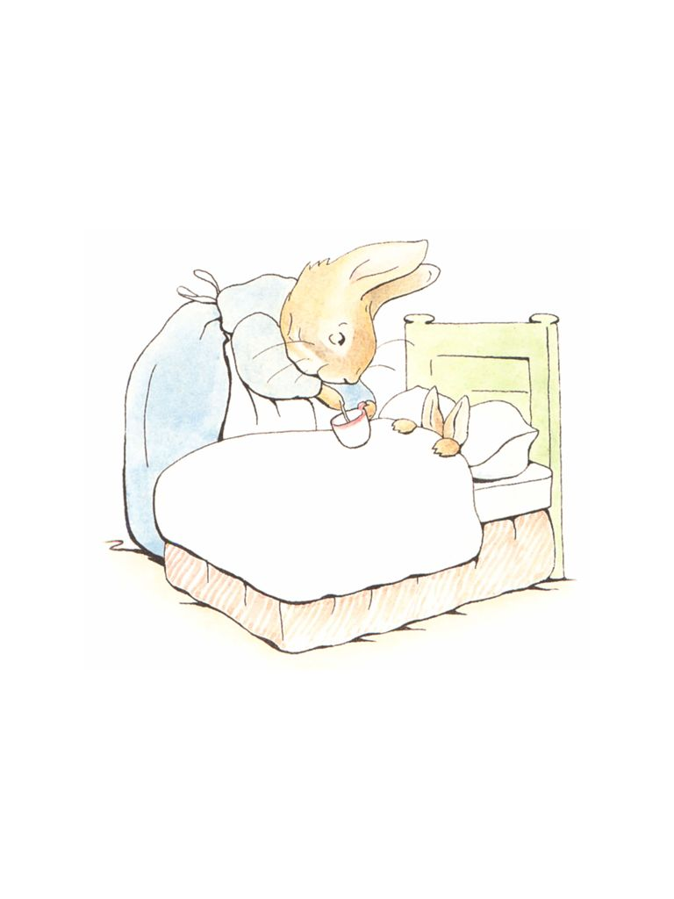
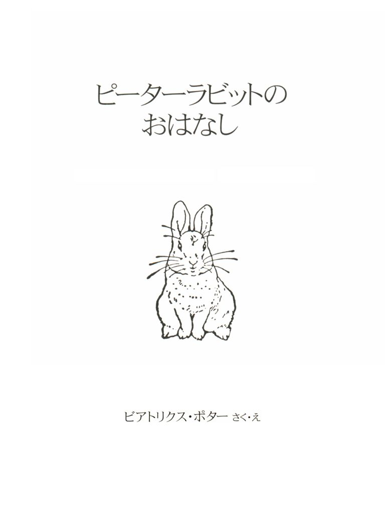
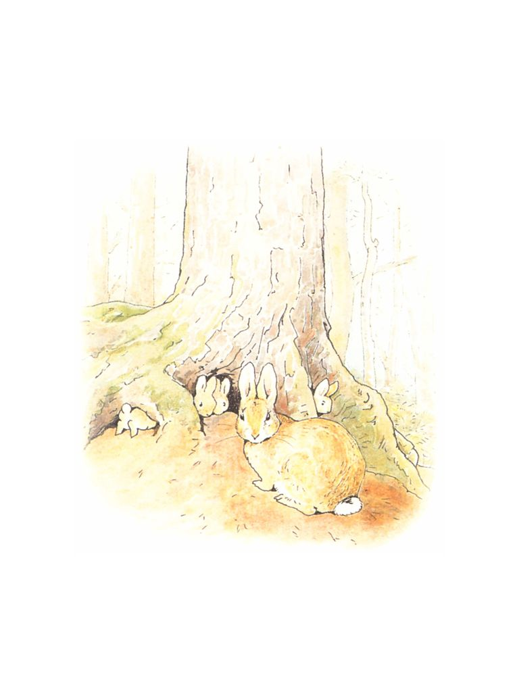
あるところに、４匹のちいさなうさぎがいました。なまえはフロプシー、モプシー、カトンテール、そしてピーターといいました。
仔うさぎたちは、とっても大きなモミの木の下にある砂の中に、おかあさんといっしょに住んでいました。
Once upon a time there were four little Rabbits, and their names were--
Flopsy,
Mopsy,
Cotton-tail,
and Peter.
They lived with their Mother in a sand-bank, underneath the root of a very big fir-tree.
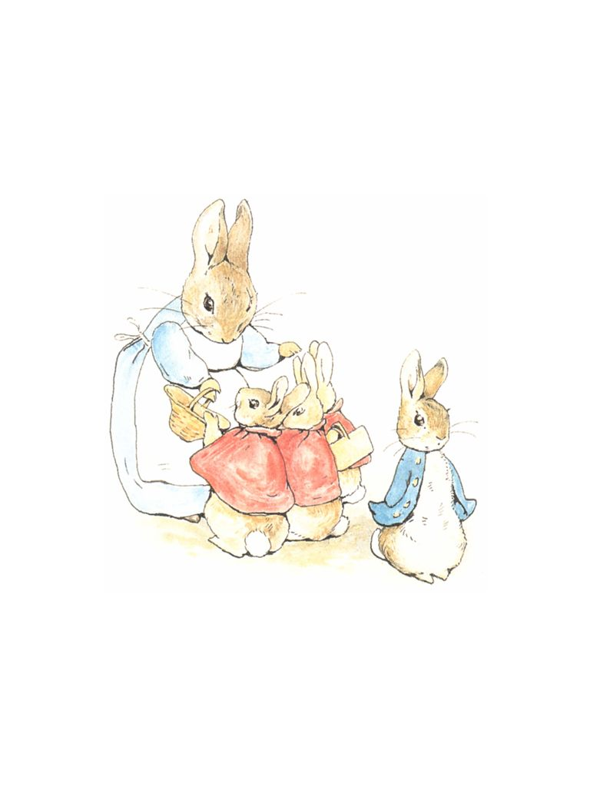
ある朝、おかあさんが言いました。「さぁ、お前たち。野原や森のみちで遊んでおいで。でも農家のマグレガーさんの畑にだけは行っちゃいけませんよ。おまえたちのおとうさんは、あそこで事故にあって、マグレガーの奥さんに肉のパイにされてしまったんですから」
'Now my dears,' said old Mrs. Rabbit one morning, 'you may go into the fields or down the lane, but don't go into Mr. McGregor's garden: your Father had an accident there; he was put in a pie by Mrs. McGregor.'
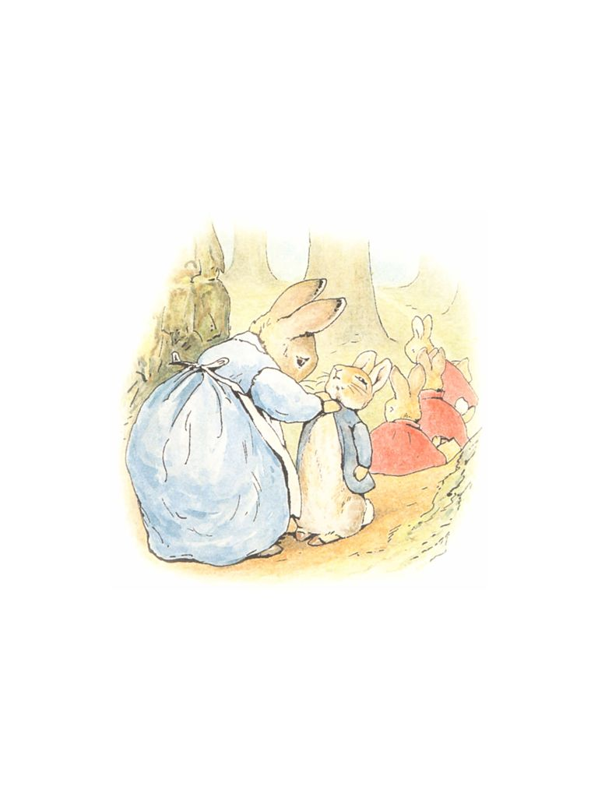
「では行ってらっしゃい。いたずらをするんじゃありませんよ。わたしは出かけてきますからね」
'Now run along, and don't get into mischief. I am going out.'
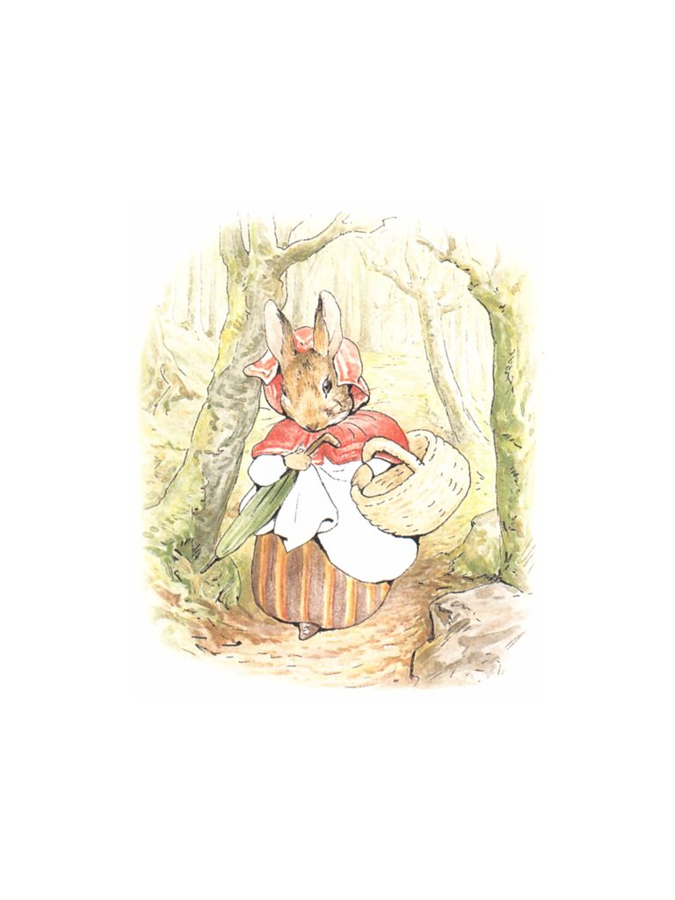
それから、おかあさんはバスケットとかさを持ち、森を抜けてパン屋さんに出かけていきました。おかあさんはそこで黒パンをひとつとぶどうパンを５つ買いました。
Then old Mrs. Rabbit took a basket and her umbrella, and went through the wood to the baker's. She bought a loaf of brown bread and five currant buns.
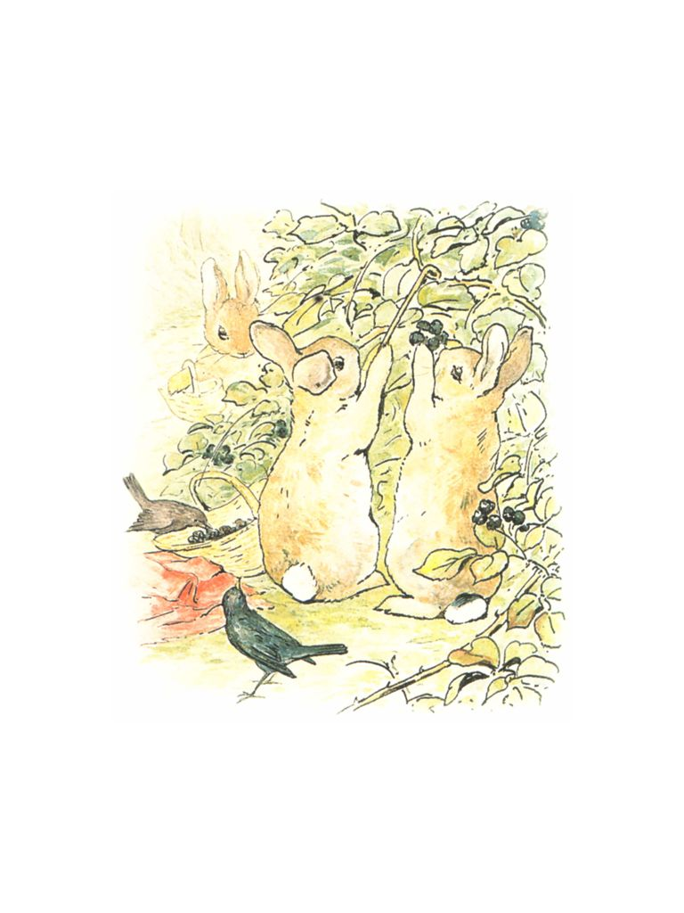
フロプシー、モプシーとカトンテールはとてもいい子でしたから森へ行ってブラックベリーを摘みました。
Flopsy, Mopsy, and Cottontail, who were good little bunnies, went down the lane to gather blackberries:
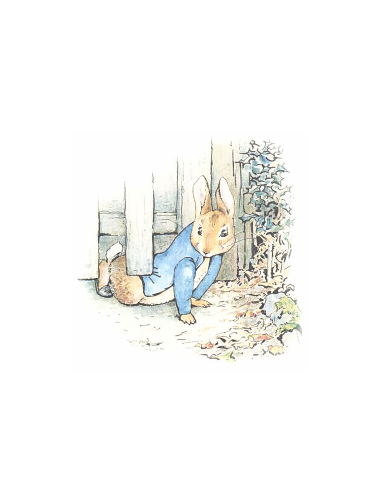
けれども、ピーターは大変ないたずらっ子でしたから、一目散にマグレガーさんの畑に駆けつけると、木戸の下から無理やりもぐりこみました。
But Peter, who was very naughty, ran straight away to Mr. McGregor's garden, and squeezed under the gate!
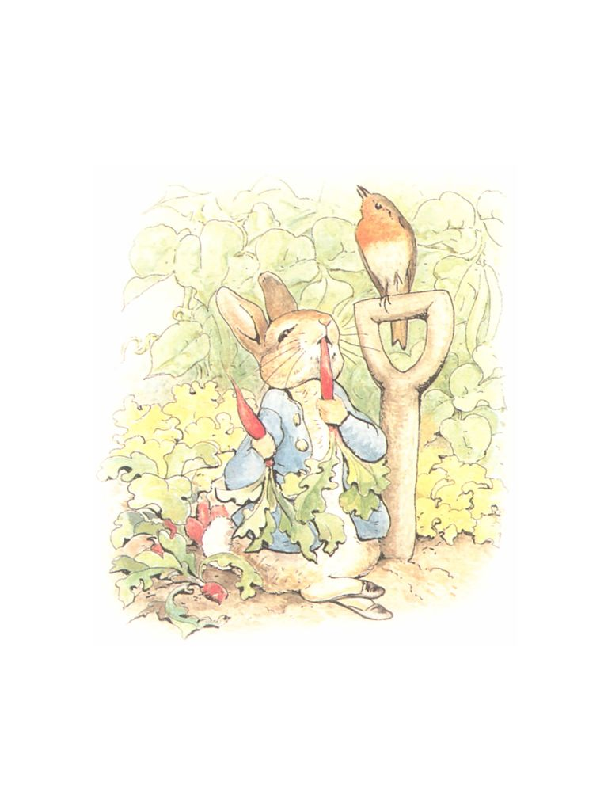
まずレタスを何枚か食べ、さやいんげんを食べ、それからラディッシュを何本か食べました。
First he ate some lettuces and some French beans; and then he ate some radishes;
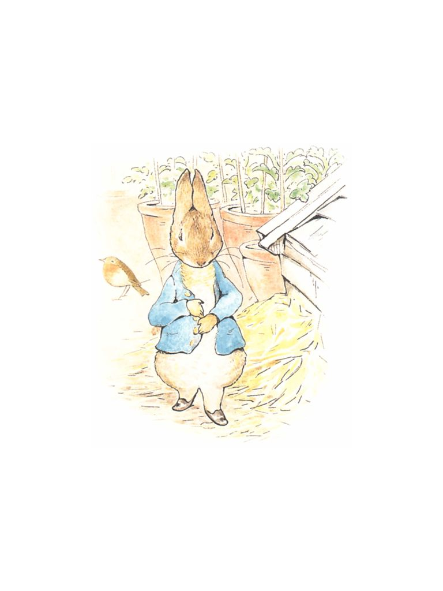
そのうち食べすぎて胸焼けを起こしてしまったため、ピーターはパセリを探しに行きました。
And then, feeling rather sick, he went to look for some parsley.
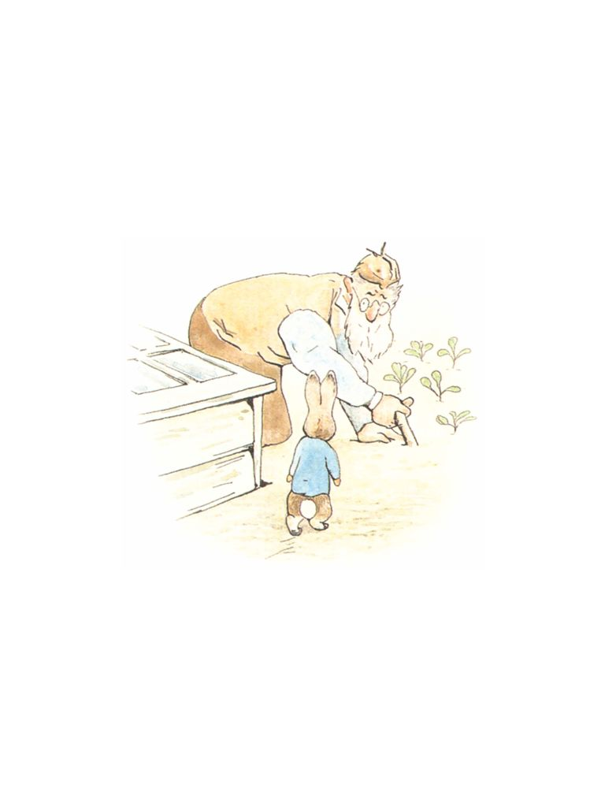
けれども、きゅうりの苗床のかどを曲がったとたん、ばったりと出くわしたのは誰だったでしょう!? マグレガーさんです！ ピーターは見つかってしまいました。
But round the end of a cucumber frame, whom should he meet but Mr. McGregor!
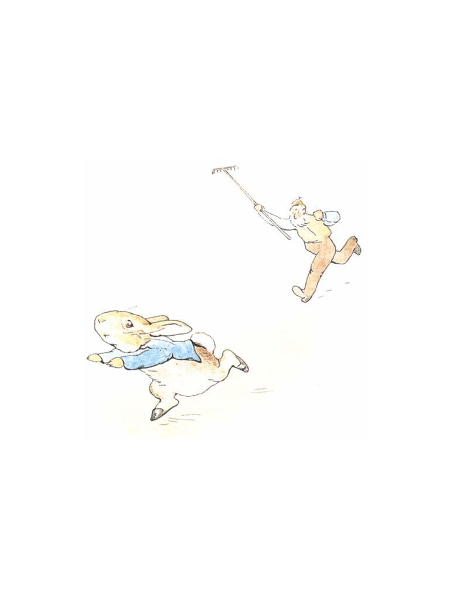
マグレガーさんはよつんばいになってキャベツの苗を植えているところでした。けれども、ピーターを見つけると、飛び上がって得物を手に「どろぼうだ、待てぇ！」と怒鳴りながら追いかけてきました。
Mr. McGregor was on his hands and knees planting out young cabbages,
but he jumped up and ran after Peter, waving a rake and calling out, 'Stop thief!'
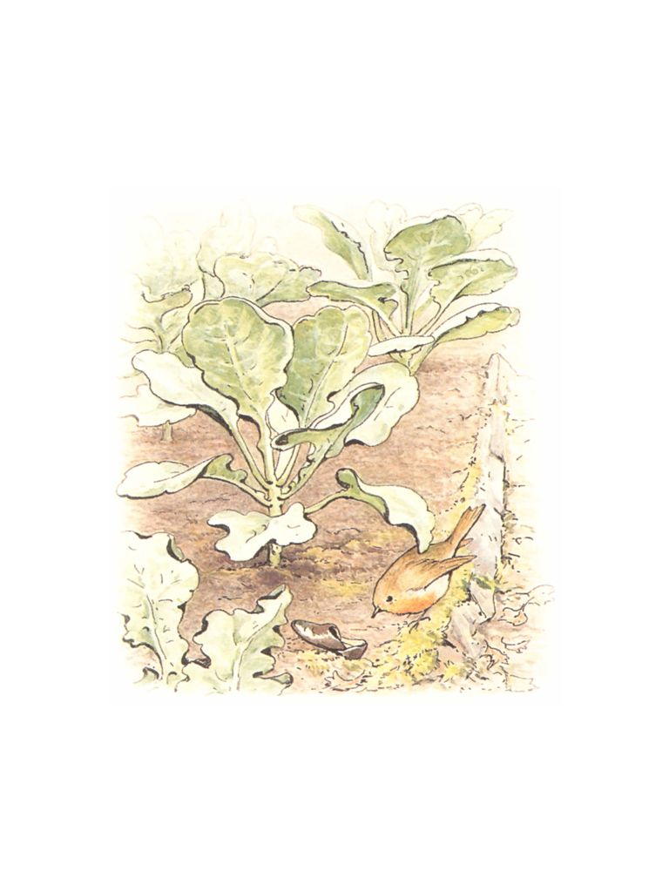
ピーターは怖くて怖くて、畑中のありとあらゆるところを逃げ回りました。どちらへ行ったら木戸があるのか、わからなくなったのです。
片方の靴はキャベツ畑へ落としてしまい、もう片方もジャガイモ畑でなくしてしまいました。
Peter was most dreadfully frightened; he rushed all over the garden, for he had forgotten the way back to the gate.
He lost one of his shoes among the cabbages, and the other shoe amongst the potatoes.
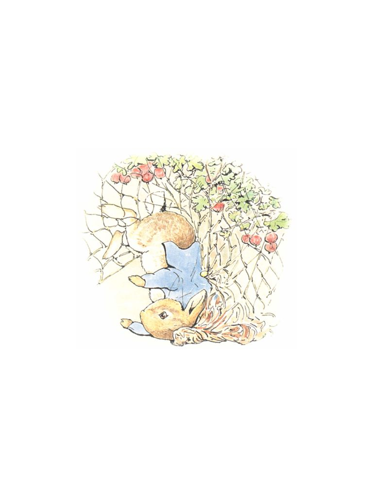
靴がなくなったので、ピーターは4本の脚でかけだしました。するとこちらの方が早くかけることができました。ですから、うまくいけば逃げられるだろうと私は思いました。でも、運悪くピーターはすぐりの木に掛けてあったネットに飛び込んでしまい、上着のボタンが網に引っかかってしまいました。その上着は青くて、大きな真鍮のボタンがついていて、まだ新しかったのに......。
After losing them, he ran on four legs and went faster, so that I think he might have got away altogether if he had not unfortunately run into a gooseberry net, and got caught by the large buttons on his jacket. It was a blue jacket with brass buttons, quite new.
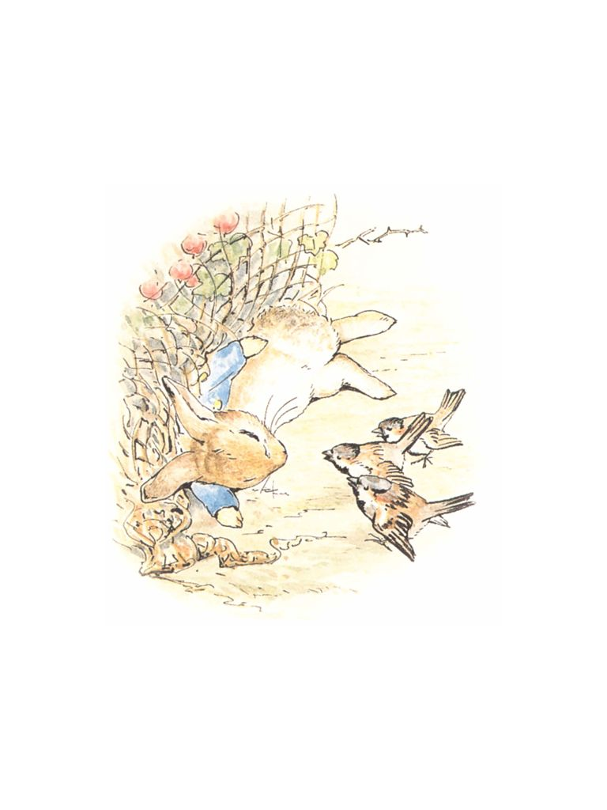
ピーターは、もうだめだと思って大粒の涙をこぼしました。その泣き声を聞きつけてスズメたちがびっくりしてやってきました。「大丈夫だよ、がんばって！」親切なスズメが応援してくれます。
Peter gave himself up for lost, and shed big tears; but his sobs were overheard by some friendly sparrows, who flew to him in great excitement, and implored him to exert himself.
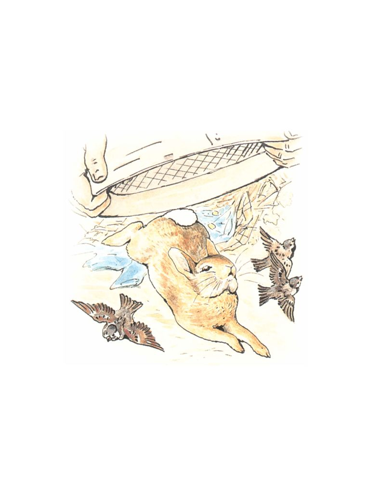
マグレガーさんがふるいを持ってやってきて、ピーターの上からポンとかぶせようとしました。ちょうどその時、ピーターは夢中で上着を脱ぎ捨てて、逃げ出すことに成功したのです。
Mr. McGregor came up with a sieve, which he intended to pop upon the top of Peter; but Peter wriggled out just in time, leaving his jacket behind him.
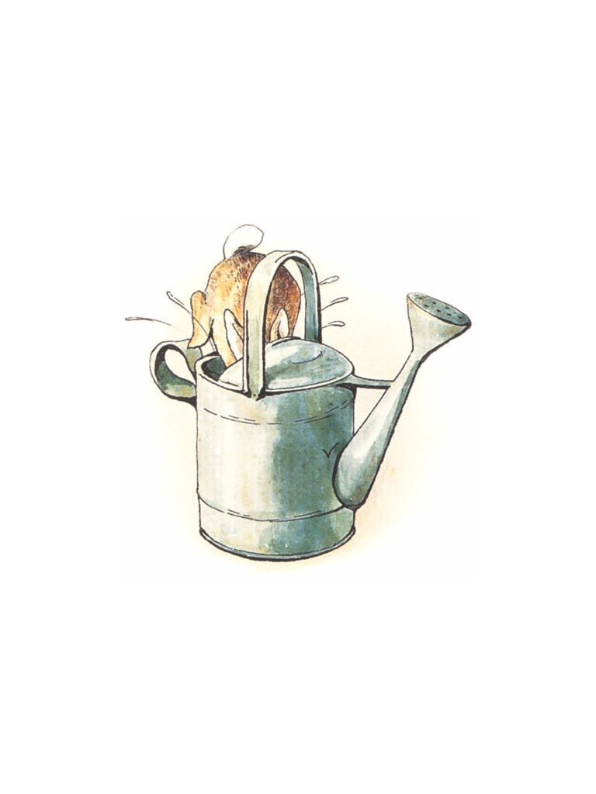
ピーターは隠れる場所を探しました。物置にかけこみ、ジョウロの中に飛び込みました。もし水がいっぱい入っていなかったのならそこはすばらしい隠れ場所だったんですけどねぇ。
And rushed into the tool-shed, and jumped into a can. It would have been a beautiful thing to hide in, if it had not had so much water in it.
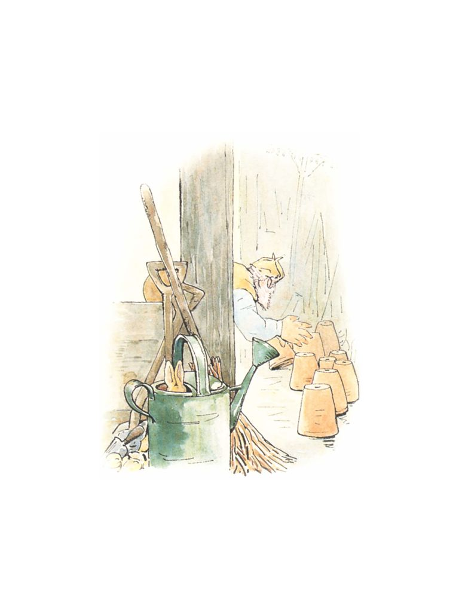
マグレガーさんは、ピーターは確かに物置にいる―――たぶん植木鉢の下にでも隠れているのではないか―――と思いました。そこで植木鉢をひとつひとつ丁寧にひっくり返して調べました。そのうちピーターが「く、く......くしゅん」とくしゃみをしました。あっという間にマグレガーさんはピーターのところに飛んできます。
Mr. McGregor was quite sure that Peter was somewhere in the tool-shed, perhaps hidden underneath a flower-pot. He began to turn them over carefully, looking under each.
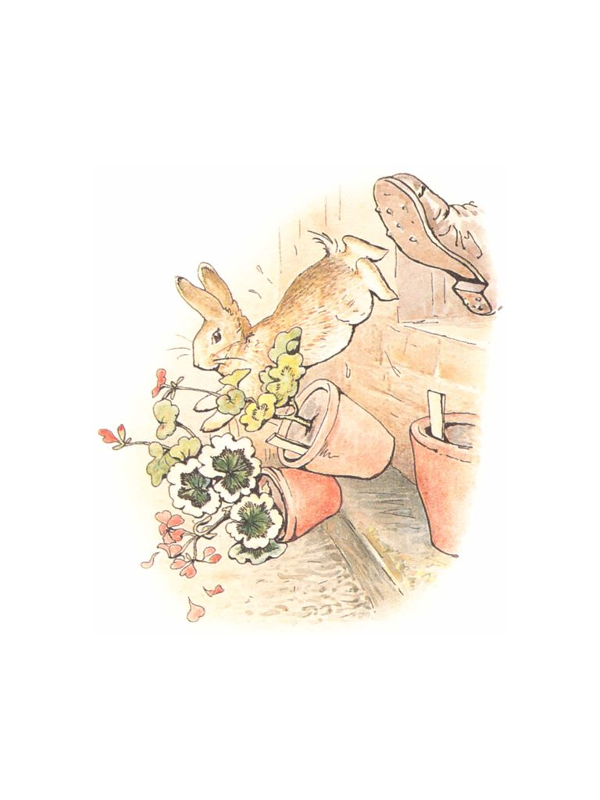
ピーターの頭をギュッと踏みつけようとしましたが、ピーターは植木鉢を３つひっくり返して、マグレガーさんには出入りできない小さい窓から飛び出しました。ピーターを追い回すのにうんざりしていたマグレガーさんは、畑に戻っていきました。
And tried to put his foot upon Peter, who jumped out of a window, upsetting three plants. The window was too small for Mr. McGregor, and he was tired of running after Peter. He went back to his work.
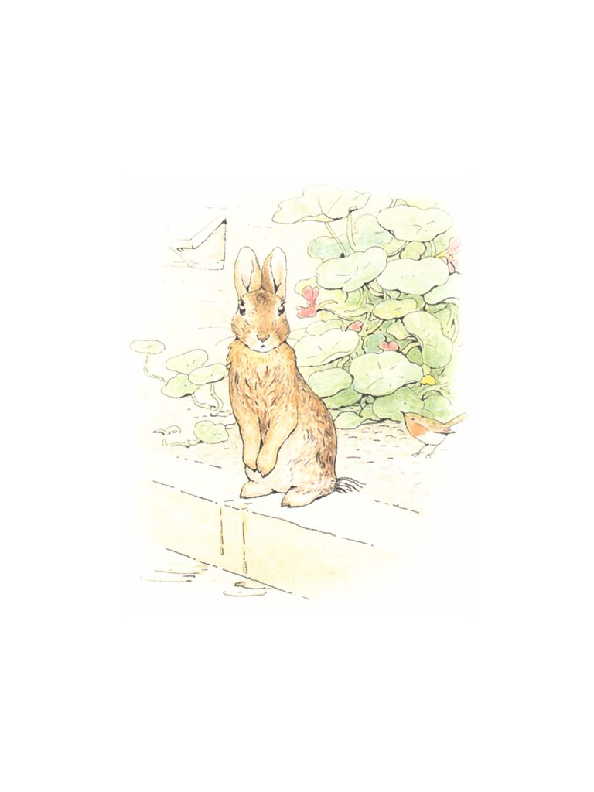
ピーターはすわりこんで休みました。息は切れ、身体は怖さでブルブルふるえていました。それにどっちに逃げていったらいいのか見当もつきませんし、おまけにジョウロの中に入っていたので身体はびしょぬれです。
やがてピーターはまた歩き始めました。ひょこひょこひょこひょこ、あまり急がずに、あちこちへ目を配りながら歩いていきました。
Peter sat down to rest; he was out of breath and trembling with fright, and he had not the least idea which way to go. Also he was very damp with sitting in that can.
After a time he began to wander about, going lippity--lippity--not very fast, and looking all round.
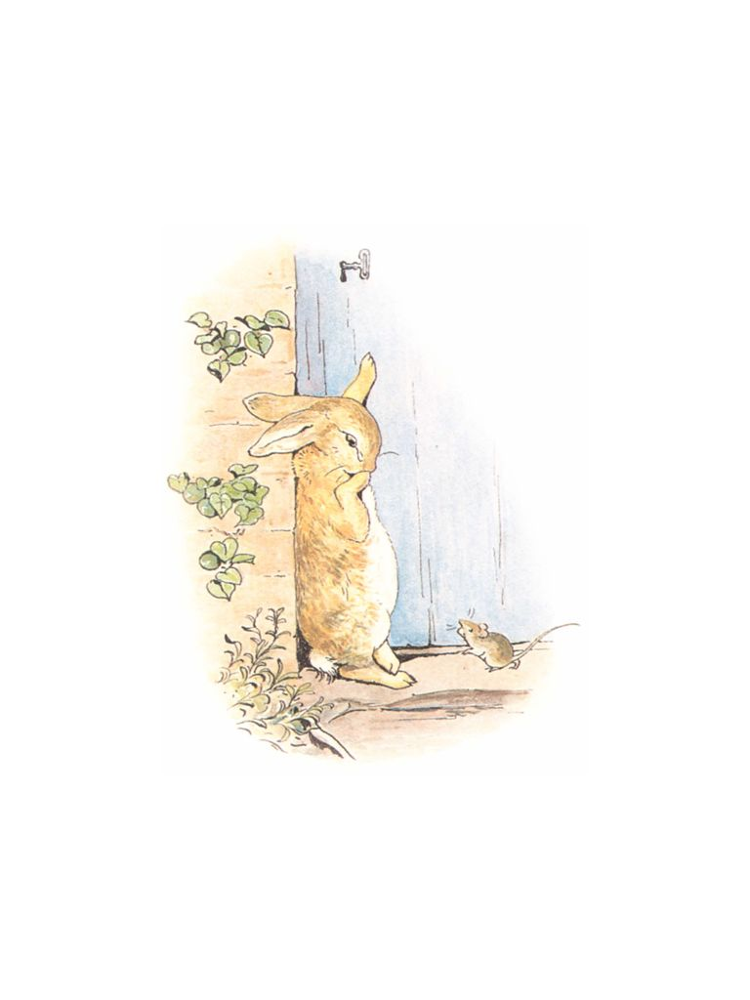
そのうち石塀のところに出入り口があるのが見つかりました。でも、戸には鍵がかかっていました。戸の下には太った仔うさぎが通り抜ける隙間はありません。
メスのねずみが１匹、戸の下から出たり入ったりして、えんどう豆やいんげん豆を、森に住んでいる家族のところへ運んでいました。ピーターは木戸がどっちにあるのかとねずみに尋ねましたが、ねずみは大きな豆を口にくわえていたので返事ができません。ただ首を振っただけでした。ピーターは泣き出しました。
He found a door in a wall; but it was locked, and there was no room for a fat little rabbit to squeeze underneath.
An old mouse was running in and out over the stone doorstep, carrying peas and beans to her family in the wood. Peter asked her the way to the gate, but she had such a large pea in her mouth that she could not answer. She only shook her head at him. Peter began to cry.
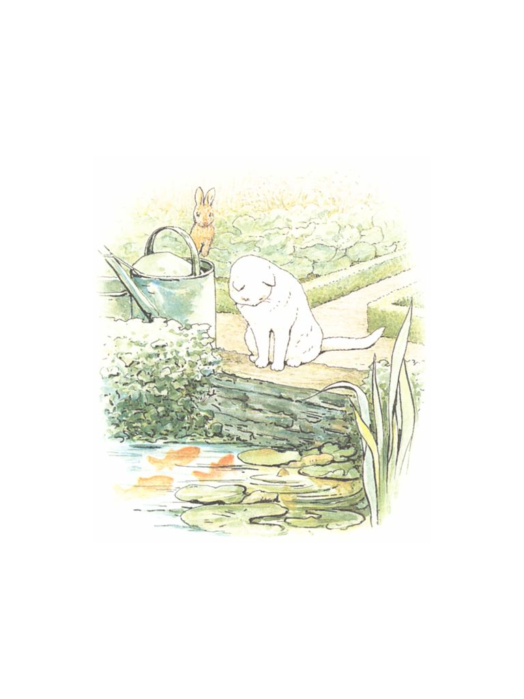
それから、ピーターは畑をまっすぐ突っ切って、向こう側の出口に出ようとしました。けれども、ますますどこがどこやらわからなくなるばかりです。そのうち池のそばに出ました。マグレガーさんがジョウロの水をくむ池です。白いねこが金魚を狙ってすわっていました。じっとすわっているのに、時々しっぽの先だけ生き物のようにぴくりぴくりと動いていました。ねこには話しかけないでいった方がいい、とピーターは思いました。ねこのことはいとこのベンジャミンからいろいろ聞いていたからです。
Then he tried to find his way straight across the garden, but he became more and more puzzled. Presently, he came to a pond where Mr. McGregor filled his water-cans. A white cat was staring at some gold-fish, she sat very, very still, but now and then the tip of her tail twitched as if it were alive. Peter thought it best to go away without speaking to her; he had heard about cats from his cousin, little Benjamin Bunny.
ピーターは、物置の方へ戻り始めました。けれど急にサクリ、サクリという鍬の音が聞こえてきたので、急いで小さな木の下へ逃げ込みました。でも、別に変ったことも起こらないので、また出てきて、手押し車の上に乗って、あたりを見わたしました。すると、まず目に入ったのがタマネギ畑を耕しているマグレガーさんの姿です。
マグレガーさんは向こうを向いていました。そして、その奥に木戸がありました。
He went back towards the tool-shed, but suddenly, quite close to him, he heard the noise of a hoe--scr-r-ritch, scratch, scratch, scritch. Peter scuttered underneath the bushes. But presently, as nothing happened, he came out, and climbed upon a wheelbarrow and peeped over. The first thing he saw was Mr. McGregor hoeing onions. His back was turned towards Peter, and beyond him was the gate!
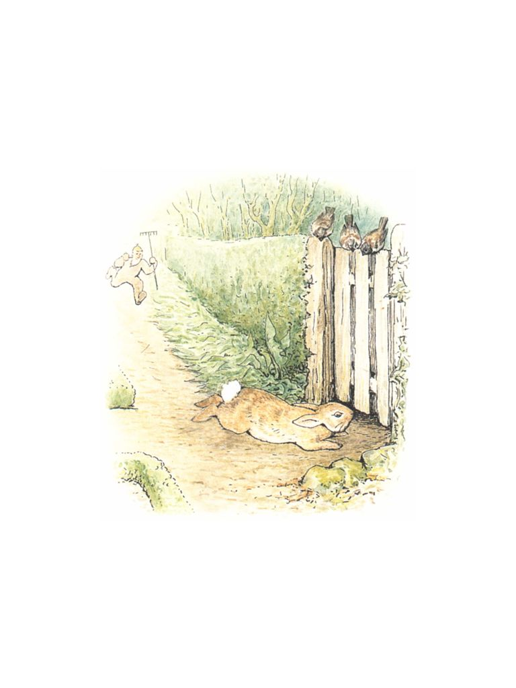
ピーターは、そっと手押し車から降りると、すぐりの生け垣のそばの道を一目散に木戸の方へ駆け出しました。
角を曲がったとたんに、マグレガーさんに見つかってしまいました。でもピーターはもうそんなことは平気です。木戸の下をくぐりぬけ、とうとう畑の外の森へ逃げ出しました。
Peter got down very quietly off the wheelbarrow; and started running as fast as he could go, along a straight walk behind some black-currant bushes. Mr. McGregor caught sight of him at the corner, but Peter did not care. He slipped underneath the gate, and was safe at last in the wood outside the garden.
マグレガーさんは、ブラックバードを追い払うために作ったかかしに、ピーターの小さな上着を着せ、靴をはかせました。
Mr. McGregor hung up the little jacket and the shoes for a scare-crow to frighten the blackbirds.
ピーターは、後ろも振り向かず駆けどおしに駆けて、大きなモミの木の下の家まで帰りつきました。
そしてくたくたにくたびれていたので、うさぎ穴の中のやわらかい砂の上にドサリと横になると、目をつぶりました。おかあさんは忙しくご飯の用意をしているところでした。ピーターは服をどこへおいてきたのだろう、とおかあさんは思いました。ピーターったら、この２週間のうちに上着を２枚と靴を２足もなくしてきたのです！
Peter never stopped running or looked behind him till he got home to the big fir-tree.
He was so tired that he flopped down upon the nice soft sand on the floor of the rabbit-hole and shut his eyes. His mother was busy cooking; she wondered what he had done with his clothes. It was the second little jacket and pair of shoes that Peter had lost in a fortnight!
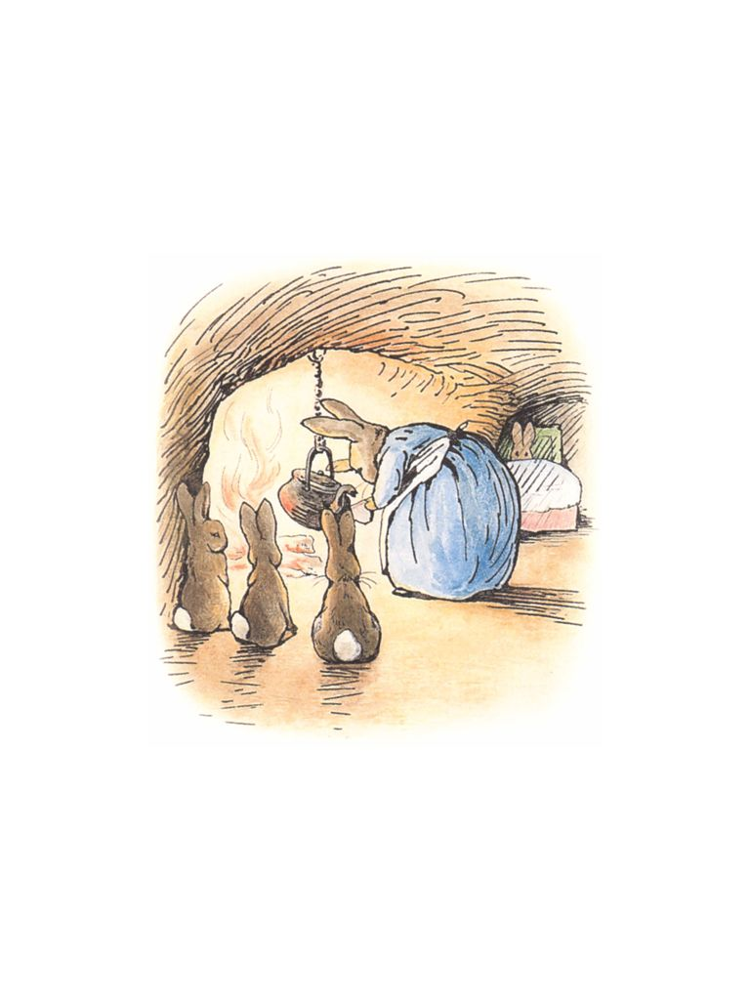
気の毒に、ピーターはその晩、お腹の具合がよくありませんでした。
おかあさんはピーターを寝かせて、カモミールを煎じて、ピーターに１回分のお薬を飲ませました。
「寝る前に大さじ１ぱいですよ」
I am sorry to say that Peter was not very well during the evening.
His mother put him to bed, and made some camomile tea; and she gave a dose of it to Peter!
'One table-spoonful to be taken at bed-time.'
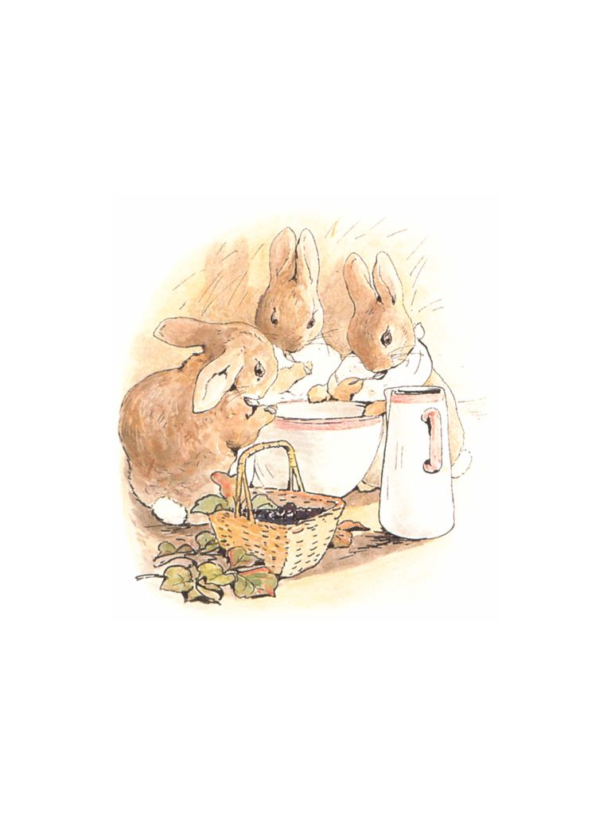
けれども、フロプシーとモプシーとカトンテールは、パンにミルクをかけたのとブラックベリーを晩ごはんにいただきました。
おしまい
But Flopsy, Mopsy, and Cotton-tail had bread and milk and blackberries for supper.
THE END
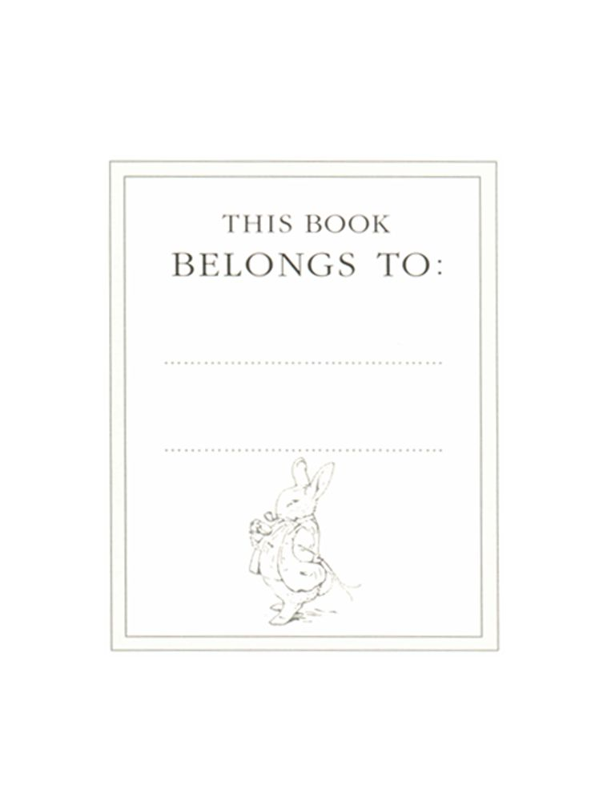
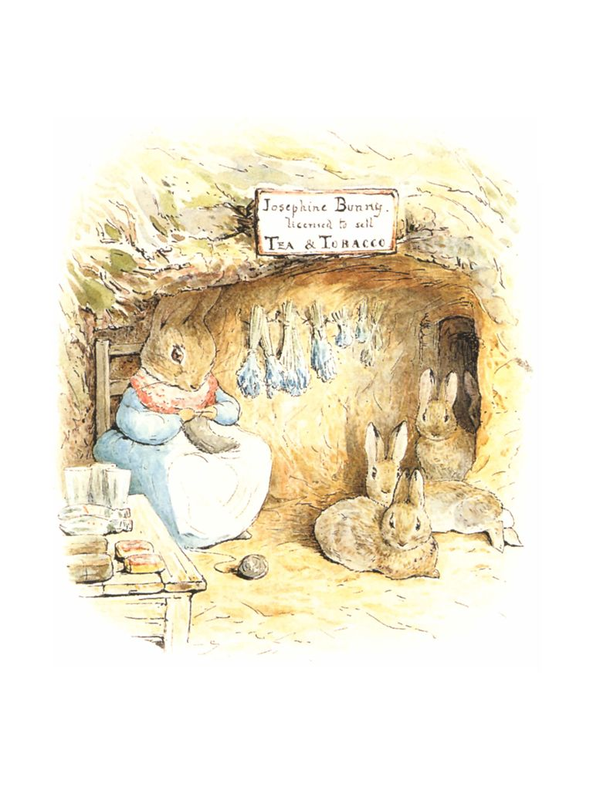
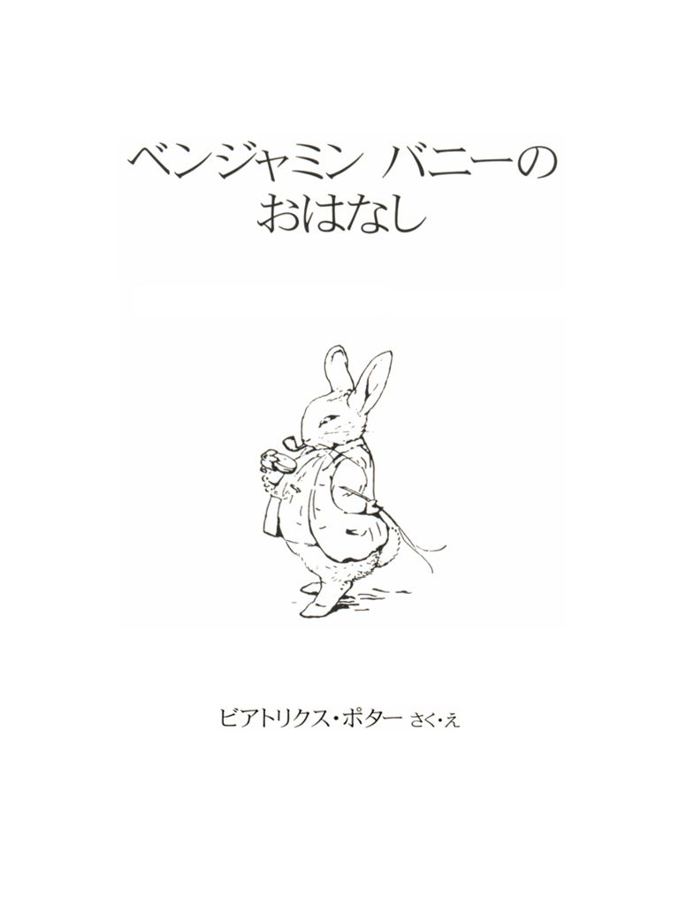
ある朝、小さなうさぎが道端の土手の上に座っていました。
うさぎは耳をピンと立てて、パカパカ パカパカという馬の足音を聞いていました。
馬車がやってきたのです。馬車を御していたのはマグレガーさんで、そのわきにはマグレガーの奥さんがよそゆきの帽子をかぶってすわっていました。
One morning a little rabbit sat on a bank.
He pricked his ears and listened to the trit-trot, trit-trot of a pony.
A gig was coming along the road; it was driven by Mr. McGregor, and beside him sat Mrs. McGregor in her best bonnet.
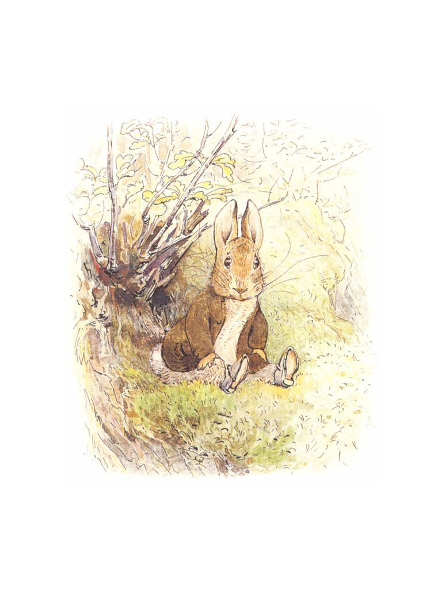
馬車が行ってしまうがはやいか、ベンジャミン・バニーは土手から道へと滑り降りて―――ホップ、スキップ＆ジャンプをしながら、親類の家に駆けつけました。この親類のうさぎたちはマグレガーさんの畑のうしろの森に住んでいたのです。
As soon as they had passed, little Benjamin Bunny slid down into the road, and set off--with a hop, skip, and a jump--to call upon his relations, who lived in the wood at the back of Mr. McGregor's garden.
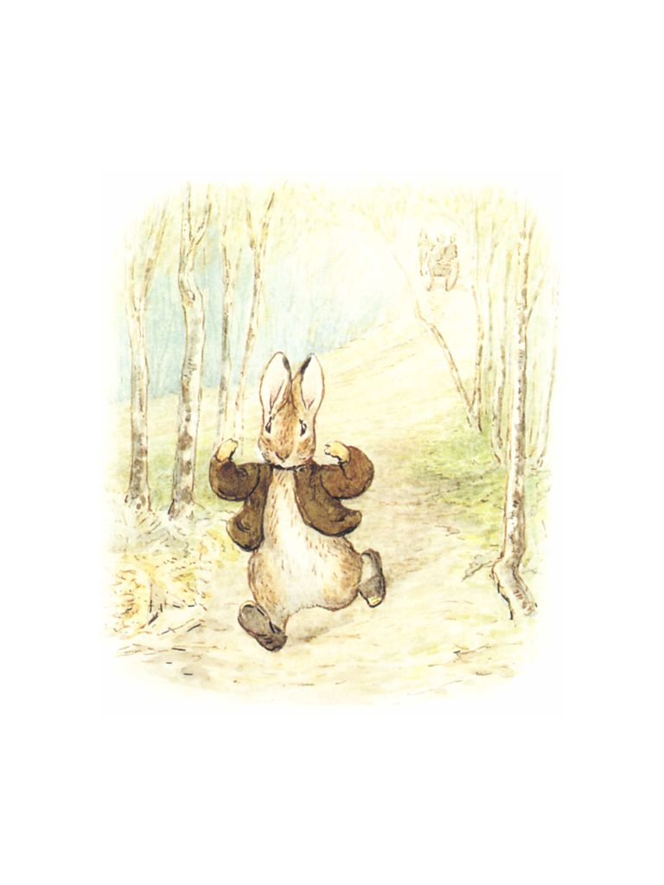
その森には、うさぎ穴がとてもたくさんありました。中でもいちばん砂っぽい、いちばんきちんと片付いたうさぎ穴に、ベンジャミンのおばさんと、いとこのフロプシーやモプシー、カトンテール、そしてピーターが住んでいました。
ピーターたちのお父さんはもういませんでした。そこで、お母さんは、うさぎの毛の手袋やそでぐち飾りを編んで暮らしを立てていました。
（わたしも前にバザーで一組買ったことがあります。）それから、この奥さんは煎じ薬やローズマリー茶、"うさぎたばこ"も売っていました。（"うさぎたばこ"というのはわたしたちがラベンダーと呼んでいる草です。）
That wood was full of rabbit holes; and in the neatest, sandiest hole of all lived Benjamin's aunt and his cousins--Flopsy, Mopsy, Cotton-tail, and Peter.
Old Mrs. Rabbit was a widow; she earned her living by knitting rabbit-wool mittens and muffatees (I once bought a pair at a bazaar). She also sold herbs, and rosemary tea, and rabbit-tobacco (which is what we call lavender).
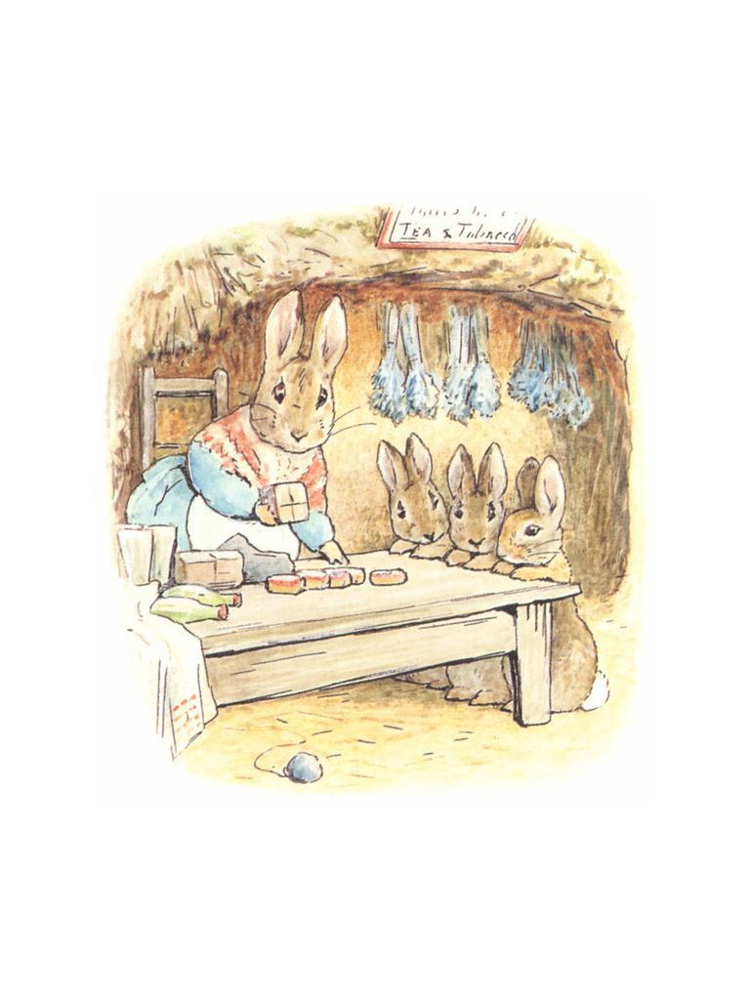
ベンジャミン・バニーは、おばさんにあまり会いたくありませんでした。
そこでモミの木の後ろにまわっていくと、もう少しでいとこのピーターにつまずきそうになりました。
Little Benjamin did not very much want to see his Aunt.
He came round the back of the fir-tree, and nearly tumbled upon the top of his Cousin Peter.
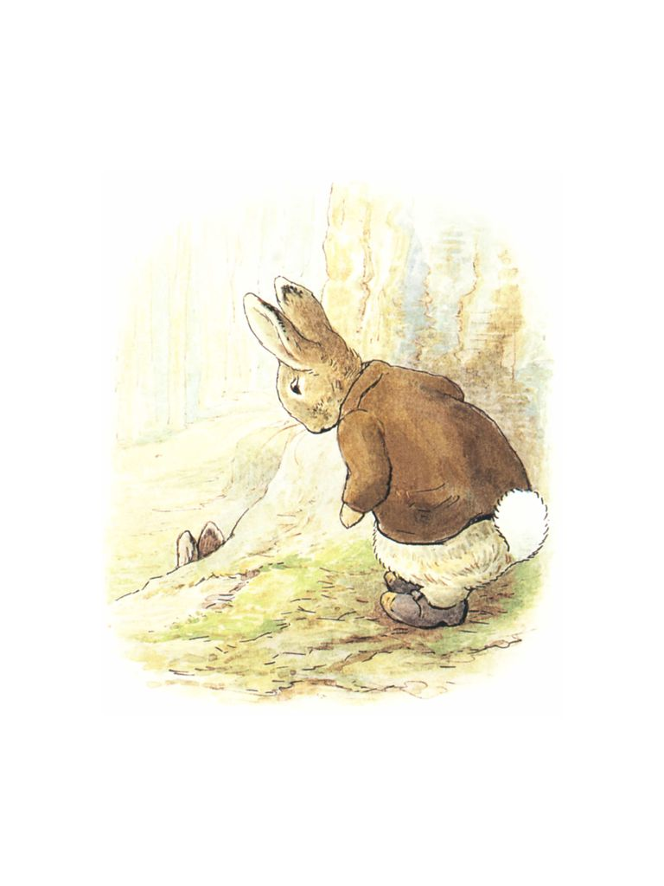
ピーターはそこにひとりでいました。ピーターはとても元気のない様子で、大きな赤い木綿のハンカチにくるまっていました。
「ピーター」ベンジャミンはひそひそ声で言いました。「お前の服、誰に取られたの？」
Peter was sitting by himself. He looked poorly, and was dressed in a red cotton pocket-handkerchief.
"Peter," said little Benjamin, in a whisper, "who has got your clothes?"
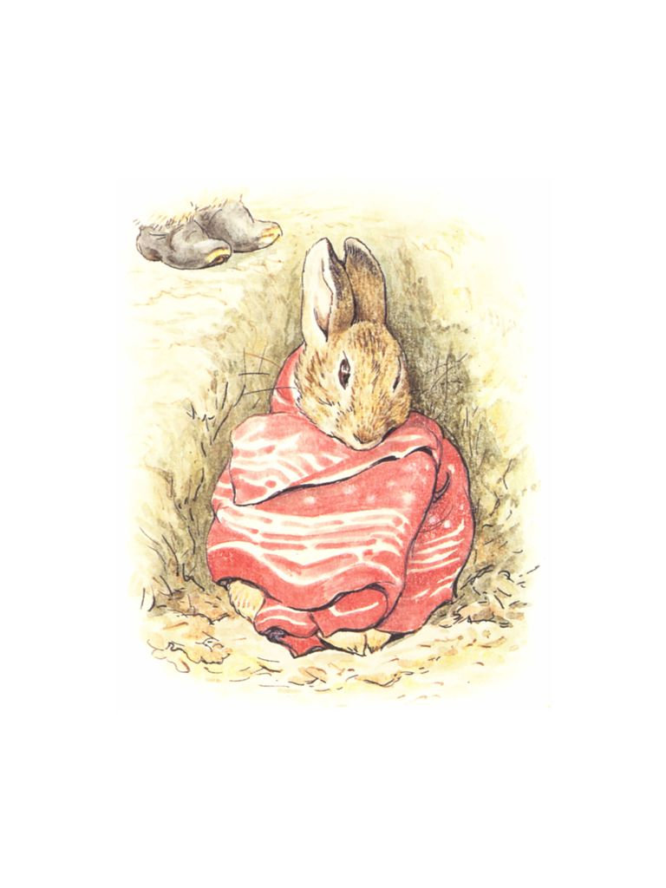
「マグレガーさんの畑のかかしに」とピーターは答えて、マグレガーさんの畑であちこち追い回されたことや、靴や上着を落としてきた話をしました。
ベンジャミンは、ピーターのそばに腰を下ろして、「今、マグレガーさんが馬車で出かけるのを見てきたよ」とつぶやき。それに奥さんはよそ行きの帽子をかぶっていったから、今日は大丈夫、一日帰ってこないさ、と言いました。
Peter replied, "The scarecrow in Mr. McGregor's garden," and described how he had been chased about the garden, and had dropped his shoes and coat.
Little Benjamin sat down beside his cousin and assured him that Mr. McGregor had gone out in a gig, and Mrs. McGregor also; and certainly for the day, because she was wearing her best bonnet.
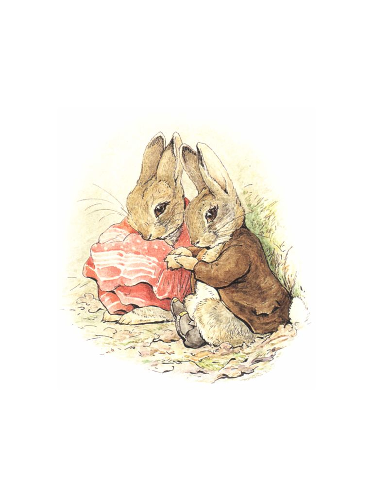
それなら、今日は雨でも降ればいい、とピーターは言いました。
その時ピーターのお母さんが穴の中で「カトンテール、カトンテール、煎じ薬にするカモミールを取っておいで！」と言っている声がしました。
ピーターは、散歩に出かけた方が気分がよくなるかも知れない、とベンジャミンに言いました。
Peter said he hoped that it would rain.
At this point old Mrs. Rabbit's voice was heard inside the rabbit hole, calling: "Cotton-tail! Cotton-tail! fetch some more camomile!"
Peter said he thought he might feel better if he went for a walk.
ふたりは、手をつないで出かけました。そして森のはずれの石垣に上ってみると、そこからはマグレガーさんの家の畑が見えました。
確かにかかしはピーターの上着を着て、靴をはいていました。そして頭にはマグレガーさんの毛糸の帽子の古くなったのをかぶっていました。
They went away hand in hand, and got upon the flat top of the wall at the bottom of the wood. From here they looked down into Mr. McGregor's garden.
Peter's coat and shoes were plainly to be seen upon the scarecrow, topped with an old tam-o'-shanter of Mr. McGregor's.
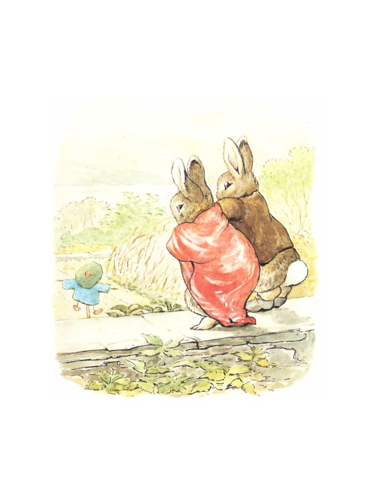
ベンジャミンは言いました。
「木戸の下をくぐったりすると、服が汚れるんだよ。ナシの木を伝わって入り込むのがいいやり方なんだ」
ピーターは頭から先にズトンと地面に落ちましたが、下の畑が耕したばかりでやわらかかったので、大したけがはありませんでした。
Little Benjamin said: "It spoils people's clothes to squeeze under a gate; the proper way to get in is to climb down a pear-tree."
Peter fell down head first; but it was of no consequence, as the bed below was newly raked and quite soft. It had been sown with lettuces.
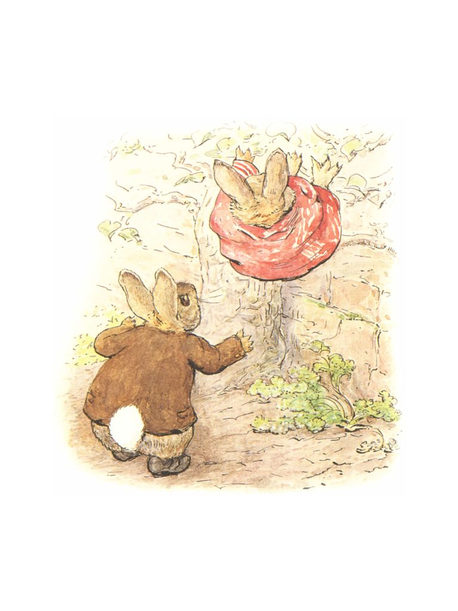
そこはレタスの種をまいたばかりの苗床でした。
ふたりは苗床中に奇妙な小さい足あとをとてもたくさんつけました。特にベンジャミンのは木靴をはいていたので、おかしな足あとでした。
They left a great many odd little footmarks all over the bed, especially little Benjamin, who was wearing clogs.
まず、ピーターの服を取り返すことにしよう、とベンジャミンは言いました。そうすればピーターの着ているハンカチを使うことができます。
ふたりはかかしを裸にしました。夜の間に雨が降ったので、靴には水がたまっていて、上着は少し縮んでいました。
ベンジャミンは毛糸の帽子をかぶってみましたが、大きすぎました。
Little Benjamin said that the first thing to be done was to get back Peter's clothes, in order that they might be able to use the pocket-handkerchief.
They took them off the scarecrow. There had been rain during the night; there was water in the shoes, and the coat was somewhat shrunk.
Benjamin tried on the tam-o'-shanter, but it was too big for him.
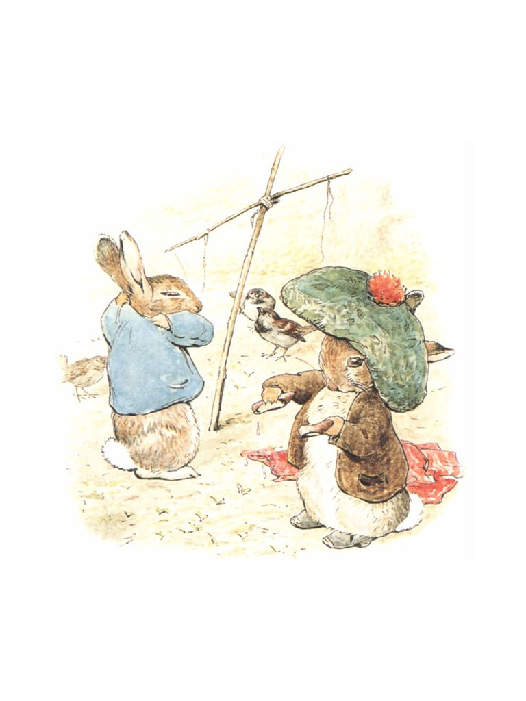
それからベンジャミンは、ハンカチにタマネギをいっぱい入れておばさんにプレゼントしようよ、と言いました。
ピーターはそわそわして、落ち着かない様子でした。色々な音が聞こえるような気がしたのです。
Then he suggested that they should fill the pocket-handkerchief with onions, as a little present for his Aunt.
Peter did not seem to be enjoying himself; he kept hearing noises.
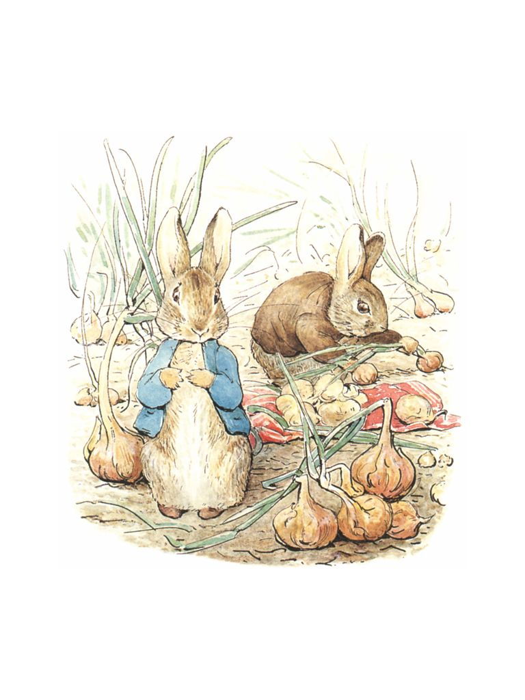
一方、ベンジャミンは悠々としたもので、レタスの葉を1枚食べたりしました。いつも日曜日にはお父さんと、ごちそうに使うレタスを取りにこの畑にくるのだ、とベンジャミンは言いました。
（ベンジャミンのお父さんは息子と同じ名前でしたが、ベンジャミン・バニー氏と呼ばれていました。）
この畑のレタスは確かに上等でした。
Benjamin, on the contrary, was perfectly at home, and ate a lettuce leaf. He said that he was in the habit of coming to the garden with his father to get lettuces for their Sunday dinner.
(The name of little Benjamin's papa was old Mr. Benjamin Bunny.)
The lettuces certainly were very fine.
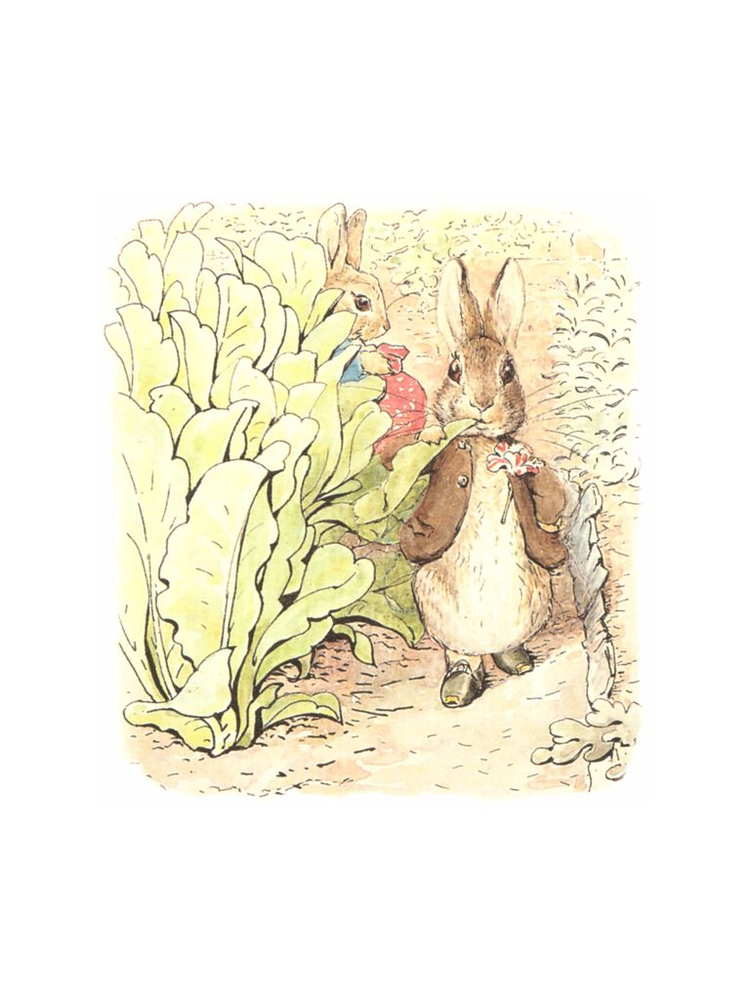
ピーターは何も食べませんでした。そして、早く家に帰りたいのだ、と言いました。少し行くうち、ピーターはタマネギを半分も落としてしまいました。
Peter did not eat anything; he said he should like to go home. Presently he dropped half the onions.
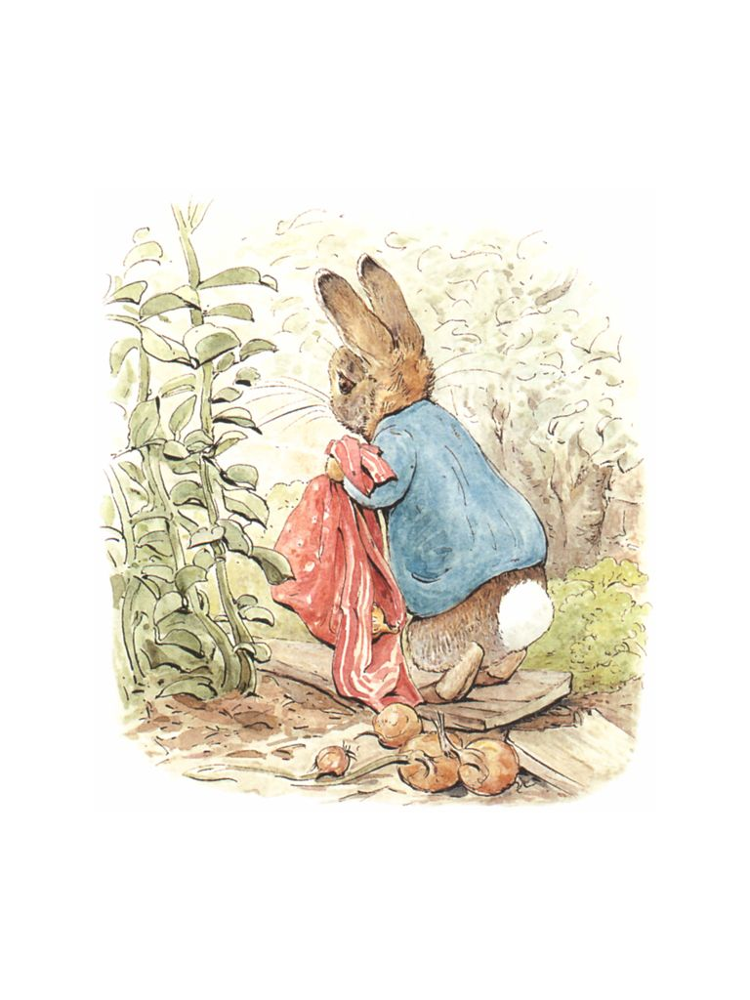
野菜の荷物を持って、ナシの木を登るのは無理だ、とベンジャミンは言いました。そして、大胆にも先に立って畑の向こう側へどんどん歩いていきました。陽のあたっている赤いレンガ塀のそばに板が渡してありました。ふたりはそこを渡っていきました。
ねずみたちが４，５匹、自分たちの家の前に座ってサクランボの種を割っていましたが、ピーターとベンジャミンを見ると目をウィンクさせてあいさつしました。
Little Benjamin said that it was not possible to get back up the pear-tree with a load of vegetables. He led the way boldly towards the other end of the garden. They went along a little walk on planks, under a sunny, red brick wall.
The mice sat on their doorsteps cracking cherry-stones; they winked at Peter Rabbit and little Benjamin Bunny.
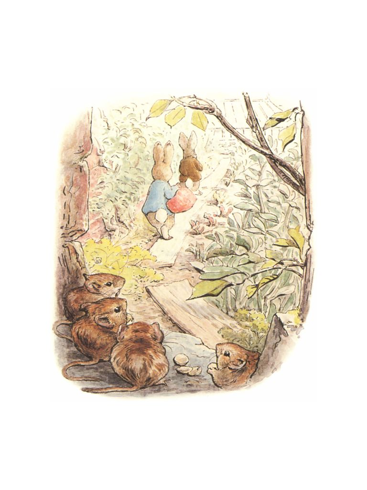
少し行くうち、ピーターはまたハンカチから手を放してしまいました。
Presently Peter let the pocket-handkerchief go again.
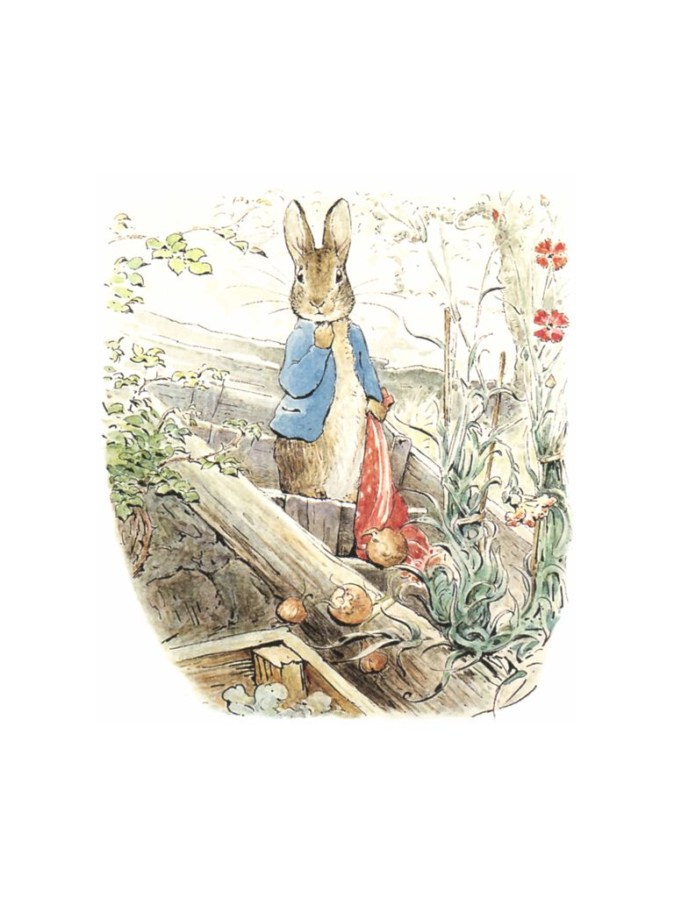
ふたりは、植木鉢やフレームや桶の間に入り込んでしまいました。いよいよ怖い音がたくさん聞こえてくるような気がして、ピーターの目はあめ玉の様に大きくなりました。
ピーターは２、３歩ベンジャミンの前を歩いていましたが、そのうち急に立ち止まりました。
They got amongst flower-pots, and frames, and tubs. Peter heard noises worse than ever; his eyes were as big as lolly-pops!
He was a step or two in front of his cousin when he suddenly stopped.
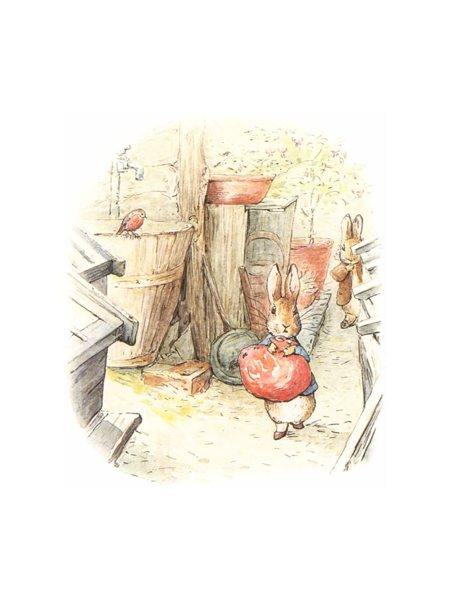
ふたりが角を曲がったとたん、目の前にいたのは、こういうものでした。
ベンジャミンはこれを見るなり、自分とピーターのタマネギの上に大きなかごをかぶせました......。
This is what those little rabbits saw round that corner!
Little Benjamin took one look, and then, in half a minute less than no time, he hid himself and Peter and the onions underneath a large basket....
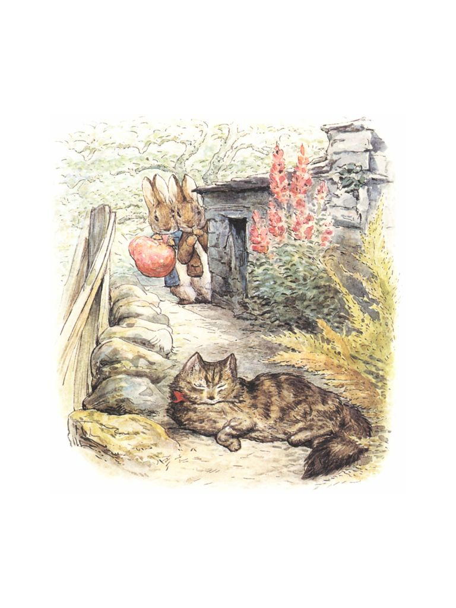
ねこは立ち上がって伸びをするとかごのそばにやってきて、においを嗅ぎました。
このねこはタマネギのにおいが好きだったのかも知れませんね！
とにかく、ねこはかごの上に登ってそこへすわりこみました。
The cat got up and stretched herself, and came and sniffed at the basket.
Perhaps she liked the smell of onions!
Anyway, she sat down upon the top of the basket.
そして、５時間座っていました。
＊ ＊ ＊
かごの中は大変暗いし、タマネギのにおいはとてもひどかったので、わたしはその中にいたピーターとベンジャミンを絵に描いてお見せするわけにはいきません。とにかくピーターとベンジャミンはタマネギのにおいには泣かされました。
お日さまは森の後ろに沈んで、もう夕方でした。でも、ねこはまだかごの上にすわっています。
She sat there forfive hours.
＊ ＊ ＊
I cannot draw you a picture of Peter and Benjamin underneath the basket, because it was quite dark, and because the smell of onions was fearful; it made Peter Rabbit and little Benjamin cry.
The sun got round behind the wood, and it was quite late in the afternoon; but still the cat sat upon the basket.
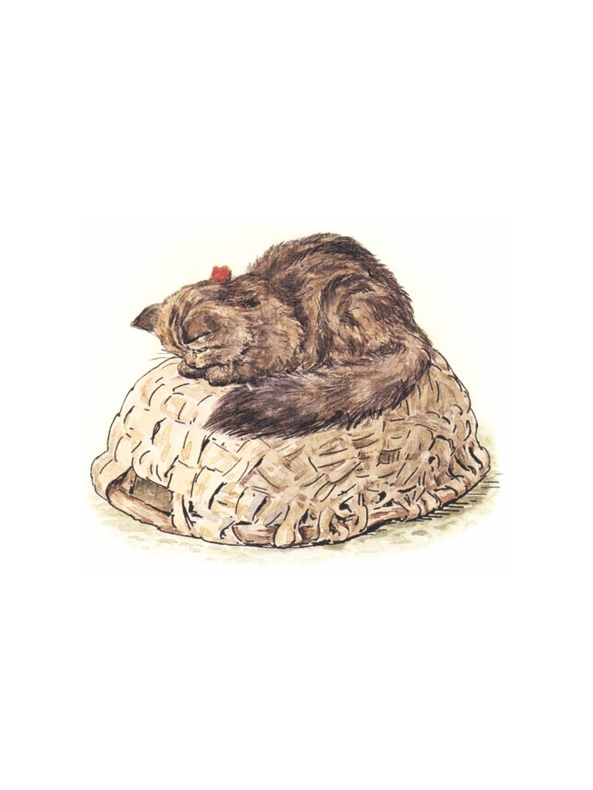
そのうち、とうとうピタパタ、ピタパタという足音がして、石塀の上からモルタルの欠片がいくつか落ちてきました。
ねこは顔を上げました。ベンジャミン・バニー氏がゆっくりやってくるところでした。
バニー氏はうさぎたばこをつめたパイプをくわえ、手には短い鞭を持っていました。
バニー氏は息子を探しにきたのです。
At length there was a pitter-patter, pitter-patter, and some bits of mortar fell from the wall above.
The cat looked up and saw old Mr. Benjamin Bunny prancing along the top of the wall of the upper terrace.
He was smoking a pipe of rabbit-tobacco, and had a little switch in his hand.
He was looking for his son.
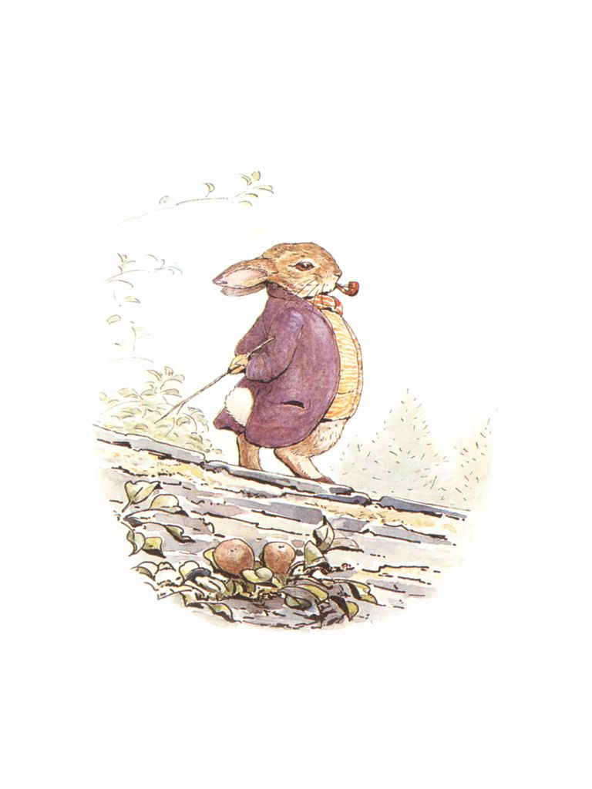
バニー氏はねこのことなど何とも思っていませんでした。
そこで、塀の上からねこの上に大きくジャンプすると、かごからたたき落とし温室の中へ蹴りこみ、毛をひっつかんで一握りむしりとってしまいました。
不意をつかれたねこは、仕返しにバニー氏をひっかくことも忘れてしまいました。
Old Mr. Bunny had no opinion whatever of cats.
He took a tremendous jump off the top of the wall on to the top of the cat, and cuffed it off the basket, and kicked it into the greenhouse, scratching off a handful of fur.
The cat was too much surprised to scratch back.
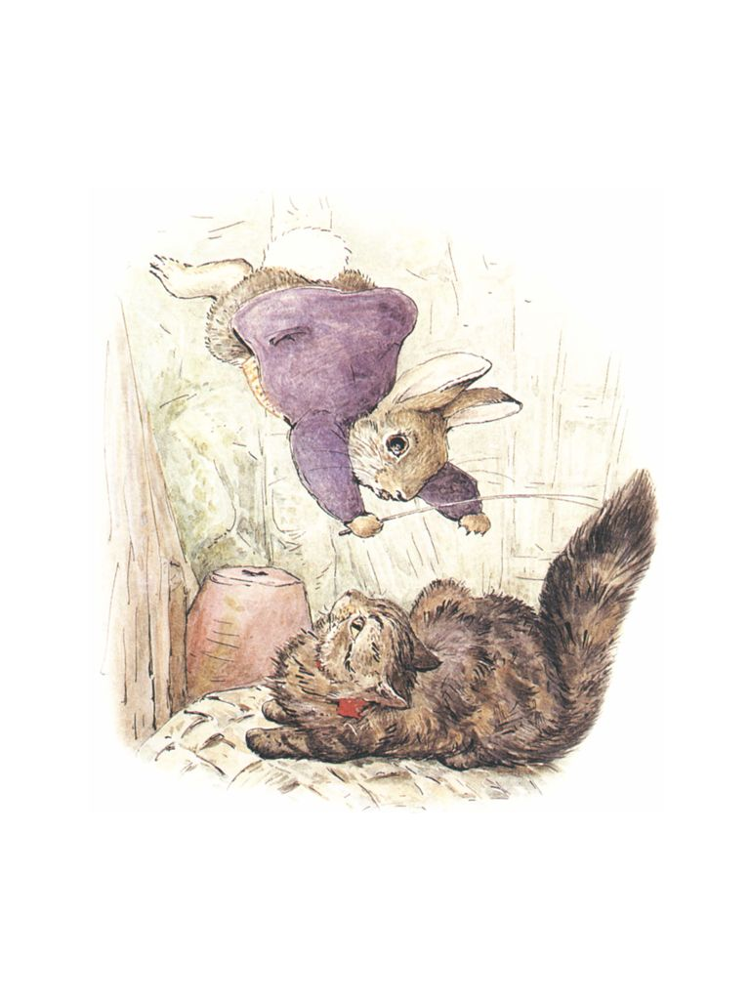
バニー氏はねこを温室に押し込めてしまうと、戸に鍵を掛けました。
それからカゴのところに戻って、息子のベンジャミンの耳を掴んでカゴから引き出し、短い鞭でぶちました。
そのあとで、甥のピーターを出しました。
When old Mr. Bunny had driven the cat into the greenhouse, he locked the door.
Then he came back to the basket and took out his son Benjamin by the ears, and whipped him with the little switch.
Then he took out his nephew Peter.
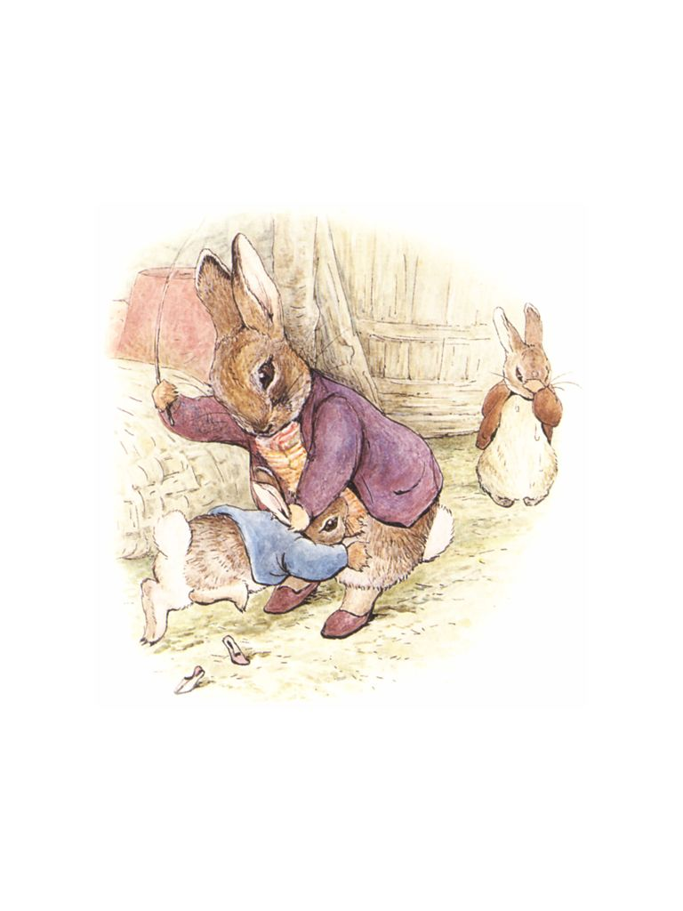
それから、ベンジャミン・バニー氏はタマネギの入っているハンカチを持ち、悠々と畑から引き揚げました。
Then he took out the handkerchief of onions, and marched out of the garden.
それから30分ほどして、家に帰って来たマグレガーさんは留守の間にいくつかわけのわからないことが起こっていることに気がつきました。
木靴をはいて、畑中を歩き回ったものがあるようです。――ただ、その足あとがとても小さいのが何ともふしぎでした。
それにどうしてねこが温室に入り込んで、自分で外から鍵を掛けたのか、それもわかりません。
When Mr. McGregor returned about half an hour later he observed several things which perplexed him.
It looked as though some person had been walking all over the garden in a pair of clogs--only the footmarks were too ridiculously little!
Also he could not understand how the cat could have managed to shut herself upinside the greenhouse, locking the door upon theoutside.
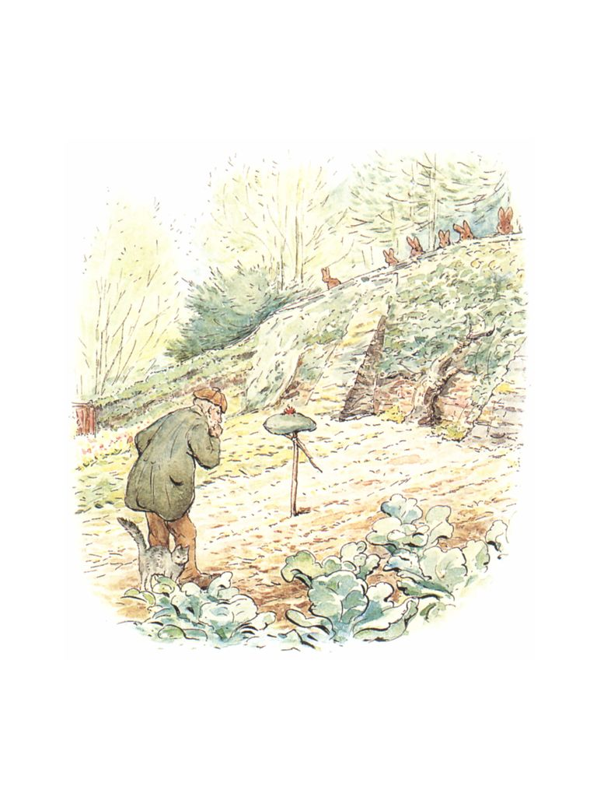
ピーターが家に帰ると、おかあさんはピーターをしからないで許してくれました。ピーターが上着を取り戻してきたのでとてもうれしかったのです。カトンテールとピーターはふたりしてハンカチをたたみました。そして、おかあさんはタマネギを束ね、他の薬草やうさぎたばこといっしょに、台所の天井につるしました。
おしまい
When Peter got home his mother forgave him, because she was so glad to see that he had found his shoes and coat. Cotton-tail and Peter folded up the pocket-handkerchief, and old Mrs. Rabbit strung up the onions and hung them from the kitchen ceiling, with the bunches of herbs and the rabbit-tobacco.
THE END
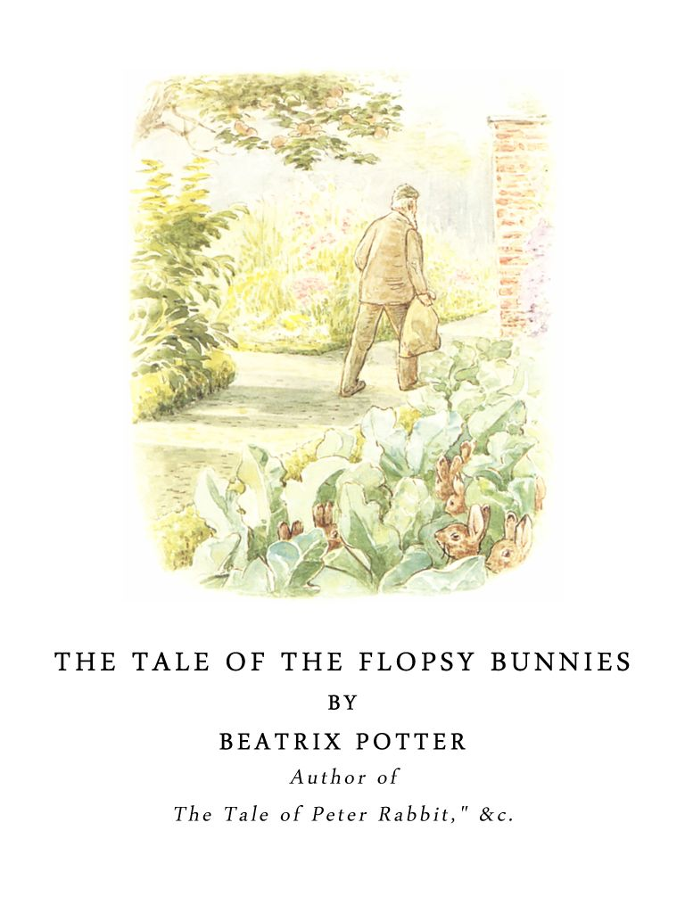
レタスを食べると催眠薬のように効くということです。
わたしはレタスを食べて眠くなったことはありません。もっともわたしはうさぎではありませんけどね。
でもプロプシーのうちの子どもたちには、確かに睡眠薬のように効きました。
It is said that the effect of eating too much lettuce is "soporific."
I have never felt sleepy after eating lettuces; but thenI am not a rabbit.
They certainly had a very soporific effect upon the Flopsy Bunnies!
ベンジャミン・バニーは大人になると、いとこのフロプシーと結婚しました。ふたりには子どもがたくさんでき、その子どもたちはみな、大変むこうみずで元気でした。
わたしはこの子どもたちの名前をいちいち覚えていませんが、みんなはいつも、この仔うさぎたちを「フロプシーのところの子どもたち」と言っていました。
When Benjamin Bunny grew up, he married his Cousin Flopsy. They had a large family, and they were very improvident and cheerful.
I do not remember the separate names of their children; they were generally called the "Flopsy Bunnies."
ベンジャミンの家には食べ物がいつも充分にある、というわけにはいきませんでした。――そこでベンジャミンはちょくちょくプロプシーの姉弟のピーターのところへキャベツを借りに行きました。ピーターはキャベツ畑を持っていたのです。
As there was not always quite enough to eat,――Benjamin used to borrow cabbages from Flopsy's brother, Peter Rabbit, who kept a nursery garden.
けれども、時にはピーターのところにも、わけてやるキャベツのない時がありました。
Sometimes Peter Rabbit had no cabbages to spare.
こんな時、プロプシーの子どもたちは草原を超えてゴミ捨て場まで出かけます。ゴミ捨て場はマグレガーさんの野菜畑の外の濠の中にありました。
When this happened, the Flopsy Bunnies went across the field to a rubbish heap, in the ditch outside Mr. McGregor's garden.
マグレガーさんのゴミ捨て場にはいろいろなものがごちゃまぜに捨ててありました。ジャムの壺やら、紙の袋やら、芝刈り機で刈った細かい芝やら（この芝はいつも油っぽい味がしました。）、腐った野菜の芯やら、それに古いブーツも１つか２つ......。ある日のこと―――ああ、なんてうれしいんでしょう！―――とうが立って花の咲いてしまったレタスがたくさん捨ててありました。
Mr. McGregor's rubbish heap was a mixture. There were jam pots and paper bags, and mountains of chopped grass from the mowing machine (which always tasted oily), and some rotten vegetable marrows and an old boot or two. One day――oh joy!――there were a quantity of overgrown lettuces, which had "shot" into flower.
フロプシーの子どもたちは、おなかがはちきれそうになるまで、そのレタスをつめこみました。そのうち、１匹、また１匹と、眠気に襲われ、細かい草の中で横になりました。
ベンジャミンは子どもたちほど正体もなく眠り込みはしませんでした。そこで、眠る前に、ハエ除けに紙袋を頭にかぶることができました。
The Flopsy Bunnies simply stuffed lettuces. By degrees, one after another, they were overcome with slumber, and lay down in the mown grass.
Benjamin was not so much overcome as his children. Before going to sleep he was sufficiently wide awake to put a paper bag over his head to keep off the flies.
子どもたちはあたたかい陽だまりで気持ちよく眠り続けました。野菜畑の向こうの芝生の方から芝刈り機のカタカタという音が聞こえてきます。青バエは、石垣のあたりでブンブンうなり、小さい年寄りねずみがジャムの壺の間で何かをつまみ食いしていました。
（わたしはこのねずみの名前を知っています。お教えしますと、これは、しっぽの長い野ねずみのトマシナ・チュウチュウです。）
The little Flopsy Bunnies slept delightfully in the warm sun. From the lawn beyond the garden came the distant clacketty sound of the mowing machine. The bluebottles buzzed about the wall, and a little old mouse picked over the rubbish among the jam pots.
(I can tell you her name, she was called Thomasina Tittlemouse, a woodmouse with a long tail.)
ねずみは紙袋の上をかけ歩いてベンジャミンを起こしてしまいました。
ねずみは平謝りに謝って、わたしはピーター・ラビットの友達です、と言いました。
She rustled across the paper bag, and awakened Benjamin Bunny.
The mouse apologized profusely, and said that she knew Peter Rabbit.
ねずみとベンジャミンが石垣のすぐ下で話し合っていますと、頭の上で重い足あとがしました。そしていきなりマグレガーさんが、刈ってきた芝を一袋、眠っている仔うさぎの上にあけました！ ベンジャミンは紙袋の中に入り込み、ねずみはジャムの壺の中に隠れました。
While she and Benjamin were talking, close under the wall, they heard a heavy tread above their heads; and suddenly Mr. McGregor emptied out a sackful of lawn mowings right upon the top of the sleeping Flopsy Bunnies! Benjamin shrank down under his paper bag. The mouse hid in a jam pot.
仔うさぎたちは、にわか雨のように降ってきた芝の下で眠ったままかわいくにっこりしました。けれど、レタスが睡眠薬のようによく効いていたので目を覚ましません。
仔うさぎたちは、おかあさんのプロプシーが乾草の寝床の中へ自分たちをくるんでくれる夢を見ていたのです。
マグレガーさんは袋をあけてからゴミ捨て場を見下ろしました。芝の中から妙な小さい耳が突き出ています。マグレガーさんはしばらくその耳をじっと見ていました。
The little rabbits smiled sweetly in their sleep under the shower of grass; they did not awake because the lettuces had been so soporific.
They dreamt that their mother Flopsy was tucking them up in a hay bed.
Mr. McGregor looked down after emptying his sack. He saw some funny little brown tips of ears sticking up through the lawn mowings. He stared at them for some time.
そのうち、ハエが1匹、ひとつの耳に止まると、その耳が動きました。
マグレガーさんはゴミ捨て場に降りてきました。
「小さいうさぎが１、２、３、４、５、６匹！」と言いながら、マグレガーさんは仔うさぎたちを袋の中へ入れました。仔うさぎたちは寝床でおかあさんに寝返りを打たせてもらう夢を見ながらちょっと身動きしましたが、目は覚ましませんでした。
Presently a fly settled on one of them and it moved.
Mr. McGregor climbed down on to the rubbish heap――
"One, two, three, four! five! six leetle rabbits!" said he as he dropped them into his sack. The Flopsy Bunnies dreamt that their mother was turning them over in bed. They stirred a little in their sleep, but still they did not wake up.
マグレガーさんは袋の口をきっちり縛って、石垣の上に置きました。
そして芝刈り機を片づけにいきました。
Mr. McGregor tied up the sack and left it on the wall.
He went to put away the mowing machine.
マグレガーさんが向こうへいっている間に、今まで家で待っていたフロプシー・バニーが草原をやってきました。
フロプシーは、何だか妙なものがあるぞ、というように袋を見て、いったいみんなはどこへ行ってしまったのだろうと思いました。
While he was gone, Mrs. Flopsy Bunny (who had remained at home) came across the field.
She looked suspiciously at the sack and wondered where everybody was?
その時、ねずみがジャムの壺から出てきて、ベンジャミンが頭から袋を取りました。そして、ふたりはフロプシーに今起こった悲しいできごとの話をしました。
ベンジャミンとフロプシーはどうしていいやら途方に暮れました。ふたりには袋のひもをほどくことはできません。
けれどもトマシナ・チュウチュウはなかなかうまいことを思いつくねずみで、袋の隅をかじって穴をあけてくれました。
Then the mouse came out of her jam pot, and Benjamin took the paper bag off his head, and they told the doleful tale.
Benjamin and Flopsy were in despair, they could not undo the string.
But Mrs. Tittlemouse was a resourceful person. She nibbled a hole in the bottom corner of the sack.
そこでベンジャミンたちは子どもたちを袋からひっぱり出し、つねって目を覚まさせました。
それから、空の袋の中には腐った野菜の芯を３つと古い靴ブラシを１つと、しなびたカブを２つ入れておきました。
The little rabbits were pulled out and pinched to wake them.
Their parents stuffed the empty sack with three rotten vegetable marrows, an old blacking-brush and two decayed turnips.
それからみんなは、繁みの陰に隠れて、マグレガーさんの来るのを待ち受けました。
Then they all hid under a bush and watched for Mr. McGregor.
マグレガーさんは戻ってきて袋を取り上げると、家に帰っていきました。
袋はだいぶ重そうにマグレガーさんの手からぶら下がっていました。
フロプシーの子どもたちは、そのあとから捕まらないように少し離れてついていきました。
Mr. McGregor came back and picked up the sack, and carried it off.
He carried it hanging down, as if it were rather heavy.
The Flopsy Bunnies followed at a safe distance.
マグレガーさんが家に入っていくのが見えました。
そこでみんなはそっと窓のそばに寄っていって耳を澄ましました。
The watched him go into his house.
And then they crept up to the window to listen.
マグレガーさんは石の床の上に、ドスン！ と袋を置きました。中に入っていたのがフロプシーの子どもたちだったら、どんなに痛かったことでしょう。
それからマグレガーさんが椅子を引き寄せる音がしてくすくす笑う声が聞こえ―――
「小さいうさぎが１、２、３、４、５、６匹よ！」という声がしました。
Mr. McGregor threw down the sack on the stone floor in a way that would have been extremely painful to the Flopsy Bunnies, if they had happened to have been inside it.
They could hear him drag his chair on the flags, and chuckle――
"One, two, three, four, five, six leetle rabbits!" said Mr. McGregor.
「え、何ですって？ 今度はうさぎどもが何を食べたんです？」とマグレガーさんの奥さんが聞きました。
「小さい太ったうさぎが、１、２、３、４、５、６匹よ！」マグレガーさんが、指で数えながら、また言いました。
「１、２、３―――」
「袋の中さ、１、２、３、４、５、６匹入っているんだ」マグレガーさんは答えました。
（一番小さい仔うさぎは窓枠の上に上りました。）
"Eh? What's that? What have they been spoiling now?" enquired Mrs. McGregor.
"One, two, three, four, five, six leetle fat rabbits!" repeated Mr. McGregor, counting on his fingers――"one, two, three――"
"Don't you be silly; what do you mean, you silly old man?"
"In the sack! one, two, three, four, five, six!" replied Mr. McGregor.
(The youngest Flopsy Bunny got upon the window-sill.)
マグレガーの奥さんは、袋を掴んで触ってみました。確かに何かが６つ入っています。けれども、とても硬くて、みな違った形をしているから老いぼれうさぎに違いない、と奥さんは言いました。
「硬くって食べられるものですか。だけど皮は私の古い外套の裏にするには上等ですよ」
「お前の外套の裏だと？」マグレガーさんが大きな声で言いました。「皮はわしが売ってたばこを買うんだ！」
「そうよ、うさぎたばこをね！ わたしはこいつらの皮を剥いで頭をちょん切ってやる」
Mrs. McGregor took hold of the sack and felt it. She said she could feel six, but they must be old rabbits, because they were so hard and all different shapes.
"Not fit to eat; but the skins will do fine to line my old cloak."
"Line your old cloak?" shouted Mr. McGregor――"I shall sell them and buy myself baccy!"
"Rabbit tobacco! I shall skin them and cut off their heads."
奥さんは、袋のひもをほどいて中へ手を入れました。
そして野菜に触るとカンカンに怒ってしまいました。奥さんは、マグレガーさんがこんなことを「わざとしたのだ」と言いました。
Mrs. McGregor untied the sack and put her hand inside.
When she felt the vegetables she became very very angry. She said that Mr. McGregor had "done it a purpose."
そしてマグレガーさんもすっかり怒ってしまいました。腐った野菜の芯が１つ台所の窓のところに飛んできて、一番小さいフロプシーの子どもにあたりました。
そうとう痛かったですよ！
And Mr. McGregor was very angry too. One of the rotten marrows came flying through the kitchen window, and hit the youngest Flopsy Bunny.
It was rather hurt.
そこで、ベンジャミンとフロプシーはもうそろそろ家に帰った方がいいと思いました。
Then Benjamin and Flopsy thought that it was time to go home.
こういうわけでマグレガーさんはたばこを買うことができず、奥さんはうさぎの皮を取ることができませんでした。
けれども次のクリスマスにトマシナ・チュウチュウは、うさぎの毛をたくさんもらいましたので、外套と頭巾と立派なマフ（マフラー？）とあたたかい手袋を作りました。
おしまい
So Mr. McGregor did not get his tobacco, and Mrs. McGregor did not get her rabbit skins.
But next Christmas Thomasina Tittlemouse got a present of enough rabbit-wool to make herself a cloak and a hood, and a handsome muff and a pair of warm mittens.
あるところに、３匹の仔ねこがいました。名前はミトンにトムにモペットと言いました。
３匹はそれぞれに違ったかわいい毛皮を着ていました。そして玄関の土間のところで転げまわったり、泥だらけになって遊んだりしました。
Once upon a time there were three little kittens, and their names were Mittens, Tom Kitten, and Moppet.
They had dear little fur coats of their own; and they tumbled about the doorstep and played in the dust.
ところがある日、おかあさんねこのタピタ・トウィチットさんがお茶の会にお友達を呼ぶことになりました。そこで、おかあさんはお客さんが来る前にトムたちを洗ってやり、いい服に着替えさせようと思って、うちの中へ連れていきました。
But one day their mother--Mrs. Tabitha Twitchit--expected friends to tea; so she fetched the kittens indoors, to wash and dress them, before the fine company arrived.
まず、お母さんは子どもたちの顔を洗いました。（今、洗ってもらっているのはモペットです。）
First she scrubbed their faces (this one is Moppet).
それから、毛にブラシを掛けました。（今、ブラシをかけてもらっているのはミトンです。）
Then she brushed their fur, (this one is Mittens).
それから、しっぽとひげをくしでとかしました。（今、とかしてもらっているのはトムです。）
トムは大変言うことを聞かない子で、お母さんをひっかきました。
Then she combed their tails and whiskers (this is Tom Kitten).
Tom was very naughty, and he scratched.
おかあさんは、娘のモペットとミトンにはひらひらえりをつけたよそ行きのエプロン服を着せました。それからタンスの引き出しをあけて、美しいきゅうくつな服をたくさん取り出して、息子のトムに着せようとしました。
Mrs. Tabitha dressed Moppet and Mittens in clean pinafores and tuckers; and then she took all sorts of elegant uncomfortable clothes out of a chest of drawers, in order to dress up her son Thomas.
トムはとても太っている上に、前よりもだいぶん大きくなっていました。そこでボタンがいくつか弾けて飛びました。それをおかあさんはまた縫い付けました。
Tom Kitten was very fat, and he had grown; several buttons burst off. His mother sewed them on again.
仔ねこたちの支度がすむとタビタ奥さんはお茶会のごちそうにあたたかいバタートーストを作る間、子どもたちが邪魔をしないように、と外へ追い出しました。
「さあお前たち、服を汚さないようにね！ うしろあしで歩かなくちゃいけませんよ。それから汚いゴミのあるところへは入らないようにして、雌鶏のサリーさんや、豚小屋や、アヒルのパドルダックさんたちのそばには行くんじゃないありませんよ！」
When the three kittens were ready, Mrs. Tabitha unwisely turned them out into the garden, to be out of the way while she made hot buttered toast.
"Now keep your frocks clean, children! You must walk on your hind legs. Keep away from the dirty ash-pit, and from Sally Henny Penny, and from the pig-stye and the Puddle-Ducks."
モペットとミトンは、庭の小道をよろよろしながら歩いていきました。そのうちエプロン服のすそをふんでパタンとうつぶせに転んでしまいました。
起き上がってみると服のあちこちに緑のシミがついてしまっていました。
Moppet and Mittens walked down the garden path unsteadily. Presently they trod upon their pinafores and fell on their noses.
When they stood up there were several green smears!
「築山にのぼって石垣の上にすわっていることにしましょう」とモペットが言いました。
モペットとミトンはエプロン服を後ろ前に着て飛んだり跳ねたりしながら築山をのぼっていきました。そのうちにモペットのきれいなえりが石垣の外の道に落ちてしまいました。
"Let us climb up the rockery, and sit on the garden wall," said Moppet.
They turned their pinafores back to front, and went up with a skip and a jump; Moppet's white tucker fell down into the road.
トムはズボンをはき、うしろあしで立っていたのでとても飛んだり跳ねたりはできません。あたりの草を倒したり、右や左にボタンを落としたりしながら、ちょこちょこ歩きでやっと築山の上までのぼりました。
石垣の上についたときトムはヘトヘトになっていました。
Tom Kitten was quite unable to jump when walking upon his hind legs in trousers. He came up the rockery by degrees, breaking the ferns, and shedding buttons right and left.
He was all in pieces when he reached the top of the wall.
モペットとミトンは何とかトムにかっこうをつけようとしましたが、トムの帽子は石垣の外に落ちてしまうし、残っていたボタンも跳ね飛びました。
Moppet and Mittens tried to pull him together; his hat fell off, and the rest of his buttons burst.
みんなが大変困っていた時、ぴたんぱたん、ぴたんぱたん、という音がして、アヒルのパドルダックさんたちが下の道を１列縦隊でやってきました―――ぴたんぱたん、ぴたんぱたん！
While they were in difficulties, there was a pit pat paddle pat! and the three Puddle-Ducks came along the hard high road, marching one behind the other and doing the goose step--pit pat paddle pat! pit pat waddle pat!
アヒルたちは立ち止まると１列に並んでトムたちを見上げました。アヒルたちの目は大変小さくて、びっくりしたような顔をしていました。
They stopped and stood in a row, and stared up at the kittens. They had very small eyes and looked surprised.
そのうち、メスのアヒルのレベッカとジマイマが、帽子とえりをひろって頭にかぶりました。
Then the two duck-birds, Rebeccah and Jemima Puddle-Duck, picked up the hat and tucker and put them on.
ミトンはあまり笑ったので石垣から落ちてしまいました。モペットとトムもその後から降りていきました。降りる途中で、ミトンたちのエプロン服と、トムの着ていたもの全部が脱げてしまいました。
「さぁ、ドレーク・パドルダックさん、トムに服を着せるのを手伝ってくださいよ」とモペットは言いました。
Mittens laughed so that she fell off the wall. Moppet and Tom descended after her; the pinafores and all the rest of Tom's clothes came off on the way down.
"Come! Mr. Drake Puddle-Duck," said Moppet--"Come and help us to dress him! Come and button up Tom!"
オスのアヒルのドレークさんは、ゆっくりと横歩きのようなかっこうで寄ってきて、落ちていたいろんなものを拾いあげました。
Mr. Drake Puddle-Duck advanced in a slow sideways manner, and picked up the various articles.
そしてドレークさんはそれをみんな自分で着てしまいました！ 服はトムが着た時よりもっと似合いませんでした。
「いいお天気で。ではさようなら」とドレークさんは言いました。
But he put them on _himself!_ They fitted him even worse than Tom Kitten.
"It's a very fine morning!" said Mr. Drake Puddle-Duck.
そして、ドレークさんは奥さんのジマイマとレベッカを連れて、ぴたんぱたん、ぴたんぱたん、と歩調をそろえて行ってしまいました。
And he and Jemima and Rebeccah Puddle-Duck set off up the road, keeping step--pit pat, paddle pat! pit pat, waddle pat!
その時、タビタ奥さんが庭に出てきました。すると子どもたちは何にも着ないで石垣の上にすわっているではありませんか。
Then Tabitha Twitchit came down the garden and found her kittens on the wall with no clothes on.
奥さんは子どもたちを石垣から引きずりおろしてパンとはたいてうちに連れて帰りました。
「もうすぐおかあさんのお友達がいらっしゃるのです。こんな格好ではみっともなくてお客様の前には出せません。おかあさんは恥ずかしく思います」と奥さんは言いました。
She pulled them off the wall, smacked them, and took them back to the house.
"My friends will arrive in a minute, and you are not fit to be seen; I am affronted," said Mrs. Tabitha Twitchit.
「悪いことをした子供はベッドで寝ていなさい」と言って、奥さんはトムたちを2階へ追い上げてました。そしてお客様には、「子どもははしかで寝ております」と言いました。
奥さんがそんなことを言ったのは残念ですね。だってそれは本当ではありませんもの。
She sent them upstairs; and I am sorry to say she told her friends that they were in bed with the measles; which was not true.
でも子どもたちはベッドで寝てなんかいませんでした。
どういうわけか、お客様たちの頭の上からはものすごい音が聞こえてきました。そして重々しく静かなはずのお茶会の空気は大変かき乱されました。
Quite the contrary; they were not in bed: _not_ in the least.
Somehow there were very extraordinary noises over-head, which disturbed the dignity and repose of the tea party.
いつかきっと、わたしはまた別の本を書いて、こねこのトムのおはなしをあなた方にすることになるだろうと思います。
And I think that some day I shall have to make another, larger, book, to tell you more about Tom Kitten!
さて、あのパドルダックさんたちはどうしたかと言いますと―――あのアヒルたちは池に行って泳ぎました。すると着ていたものはみんなすぐ脱げてしまいました。ボタンが一つもなかったですからね。
As for the Puddle-Ducks--they went into a pond.
The clothes all came off directly, because there were no buttons.
そして、ドレークさんと、奥さんのジマイマやレベッカは、今でもまだあの服を探しています。
おしまい
And Mr. Drake Puddle-Duck, and Jemima and Rebeccah, have been looking for them ever since.
これはモペットちゃんという名前の仔ねこです。ねずみの音がしたな、とモペットちゃんは思いました。
This is a Pussy called Miss Moppet, she thinks she has heard a mouse!
これは、戸棚のうしろから覗いているねずみです。ねずみはモペットちゃんをからかっています。仔ねこなんか怖くありません。
This is the Mouse peeping out behind the cupboard, and making fun of Miss Moppet. He is not afraid of a kitten.
モペットちゃんはねずみに飛びかかりました。でも、ちょっと遅かった。
ねずみは逃げてしまうし、モペットちゃんは頭を戸棚にぶつけてしまいました。
This is Miss Moppet jumping just too late; she misses the Mouse and hits her own head.
これはとても硬い戸棚だ！ とモペットちゃんは思いました。
She thinks it is a very hard cupboard!
ねずみは戸棚の上からモペットちゃんの様子を見ています。
The Mouse watches Miss Moppet from the top of the cupboard.
モペットちゃんは頭を小さな布で縛って、暖炉の前にすわりました。
Miss Moppet ties up her head in a duster, and sits before the fire.
あの猫はだいぶ気分が悪そうだぞ、とねずみは思いました。そこでスルスルとベルの綱をつたわって下りてきました。
The Mouse thinks she is looking very ill. He comes sliding down the bell-pull.
モペットちゃんの気分はますます悪くなっているようです。ねずみはもう少し近くまで寄ってみました。
Miss Moppet looks worse and worse. The Mouse comes a little nearer.
モペットちゃんは、いかにも頭が痛むというように両手で頭を押さえて、布にあった穴からねずみをのぞきました。ねずみはすぐそこまで来ていました。
Miss Moppet holds her poor head in her paws, and looks at him through a hole in the duster. The Mouse comes very close.
その時です！ いきなり――モペットちゃんがねずみに飛びかかりました！
And then all of a sudden――Miss Moppet jumps upon the Mouse!
ねずみはさっき、モペットちゃんをからかいました。だから、今度は自分がねずみをからかってやる――とモペットちゃんは考えました。そんなことを考えるなんて、モペットちゃんのやり方はあまり感心したものではありませんね。
And because the Mouse has teased Miss Moppet――Miss Moppet thinks she will tease the Mouse; which is not at all nice of Miss Moppet.
モペットちゃんはねずみを布にくるんで、ボールのようにあちこちへ投げて遊びました。
She ties him up in the duster, and tosses it about like a ball.
でも、モペットちゃんは布に穴があいているのを忘れていました。布をほどいてみると――ねずみはいませんでした。
But she forgot about that hole in the duster; and when she untied it――there was no Mouse!
ねずみは穴をすり抜けて逃げてしまったのです。そして戸棚の上で踊りを踊っていました。
おしまい
He has wriggled out and run away; and he is dancing a jig on the top of the cupboard!
【対訳】ピーターラビットシリーズ ５巻セット
発行日 ２０１４年２月21日
著 者 ビアトリクス・ポター
発行者 赤井 仁
発行所 ゴマブックス株式会社
〒１０７－００５２
東京都港区赤坂８－５－40
ペガサス青山７１０
(c) GOMA－BOOKS Co.,ltd. 2014